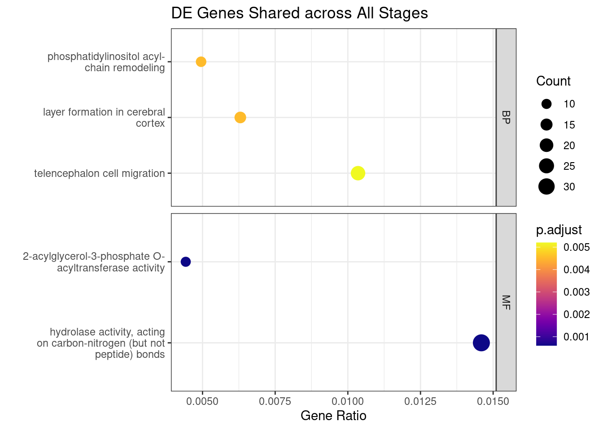
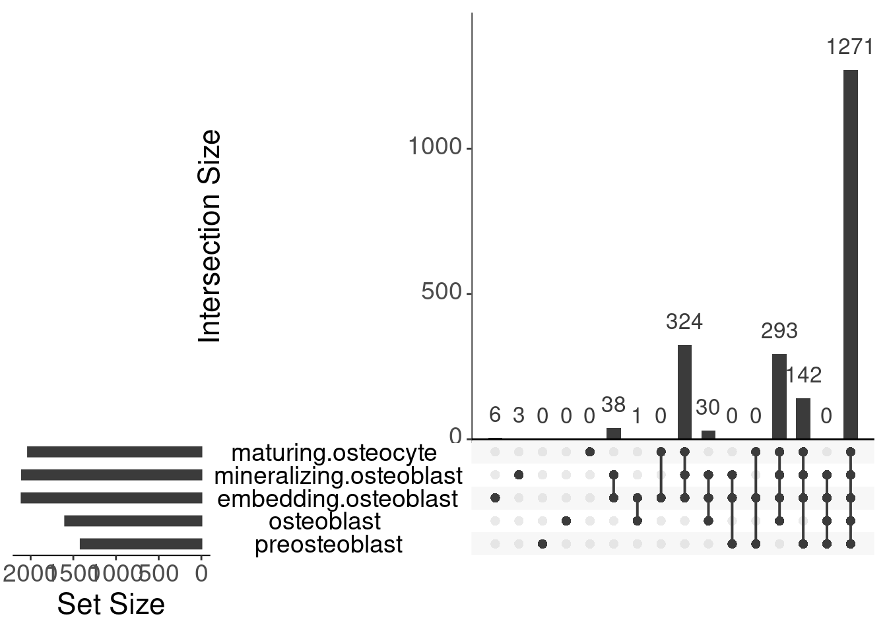

10x-plot-cormotif
Genevieve Housman
June 2021
Last updated: 2021-08-10
Checks: 6 1
Knit directory: human-chimp-skeletal-scRNA/
This reproducible R Markdown analysis was created with workflowr (version 1.6.2). The Checks tab describes the reproducibility checks that were applied when the results were created. The Past versions tab lists the development history.
The R Markdown file has unstaged changes. To know which version of the R Markdown file created these results, you’ll want to first commit it to the Git repo. If you’re still working on the analysis, you can ignore this warning. When you’re finished, you can run wflow_publish to commit the R Markdown file and build the HTML.
Great job! The global environment was empty. Objects defined in the global environment can affect the analysis in your R Markdown file in unknown ways. For reproduciblity it’s best to always run the code in an empty environment.
The command set.seed(20190719) was run prior to running the code in the R Markdown file. Setting a seed ensures that any results that rely on randomness, e.g. subsampling or permutations, are reproducible.
Great job! Recording the operating system, R version, and package versions is critical for reproducibility.
Nice! There were no cached chunks for this analysis, so you can be confident that you successfully produced the results during this run.
Great job! Using relative paths to the files within your workflowr project makes it easier to run your code on other machines.
Great! You are using Git for version control. Tracking code development and connecting the code version to the results is critical for reproducibility.
The results in this page were generated with repository version fd98145. See the Past versions tab to see a history of the changes made to the R Markdown and HTML files.
Note that you need to be careful to ensure that all relevant files for the analysis have been committed to Git prior to generating the results (you can use wflow_publish or wflow_git_commit). workflowr only checks the R Markdown file, but you know if there are other scripts or data files that it depends on. Below is the status of the Git repository when the results were generated:
Ignored files:
Ignored: .Rhistory
Ignored: .Rproj.user/
Untracked files:
Untracked: VennDiagram2021-08-10_10-18-57.log
Untracked: VennDiagram2021-08-10_10-25-59.log
Untracked: VennDiagram2021-08-10_10-26-03.log
Untracked: VennDiagram2021-08-10_10-26-04.log
Untracked: VennDiagram2021-08-10_10-26-05.log
Untracked: VennDiagram2021-08-10_10-26-09.log
Untracked: VennDiagram2021-08-10_10-26-12.log
Untracked: VennDiagram2021-08-10_10-26-14.log
Untracked: VennDiagram2021-08-10_10-51-38.log
Untracked: VennDiagram2021-08-10_10-51-46.log
Untracked: VennDiagram2021-08-10_10-51-51.log
Untracked: VennDiagram2021-08-10_10-51-57.log
Untracked: VennDiagram2021-08-10_10-52-08.log
Untracked: VennDiagram2021-08-10_10-52-20.log
Untracked: VennDiagram2021-08-10_10-52-27.log
Untracked: VennDiagram2021-08-10_10-52-39.log
Untracked: VennDiagram2021-08-10_10-52-47.log
Untracked: VennDiagram2021-08-10_10-52-53.log
Untracked: VennDiagram2021-08-10_11-33-38.log
Untracked: VennDiagram2021-08-10_11-33-42.log
Untracked: VennDiagram2021-08-10_11-33-44.log
Untracked: VennDiagram2021-08-10_11-33-45.log
Untracked: VennDiagram2021-08-10_11-33-48.log
Untracked: VennDiagram2021-08-10_11-33-52.log
Untracked: VennDiagram2021-08-10_11-33-54.log
Untracked: VennDiagram2021-08-10_11-33-56.log
Untracked: VennDiagram2021-08-10_11-33-58.log
Untracked: data/HumanPrimaryCellAtlasData-SingleR
Untracked: data/HumanPrimaryCellAtlasDetails-SingleR.csv
Untracked: data/HumanPrimaryCellAtlasLabels-SingleR.csv
Untracked: data/cell_atlas_ref_panel
Untracked: data/cellranger-data-full/
Untracked: data/cormotif-data/cormotif.cnts.pseudo-cluster8.data.filterC.log.indv-cell.intNo0.reg-tot.rds
Untracked: data/cormotif-data/cormotif.cnts.pseudo-ostcluster0.75.14.data.filterC.log.indv-cell.intNo0.reg-tot.rds
Untracked: data/cormotif-data/cormotif.cnts.pseudo-ostcluster0.75.T2.14.data.filterC.log.indv-cell.intNo0.reg-tot.rds
Untracked: data/cormotif-data/cormotif.cnts.pseudo-ostcluster0.75.T2.data.filterC.log.indv-cell.intNo0.reg-tot.rds
Untracked: data/cormotif-data/cormotif.cnts.pseudo-ostcluster0.75.data.filterC.log.indv-cell.intNo0.reg-tot.rds
Untracked: data/cormotif-data/cormotif.pseudo-ostcluster0.75.14.data.filterC.log.indv-cell.intNo0.reg-tot.rds
Untracked: data/cormotif-data/cormotif.pseudo-ostcluster0.75.T2.14.data.filterC.log.indv-cell.intNo0.reg-tot.rds
Untracked: data/cormotif-data/cormotif.pseudo-ostcluster0.75.T2.data.filterC.log.indv-cell.intNo0.reg-tot.rds
Untracked: data/cormotif-data/cormotif.pseudo-ostcluster0.75.data.filterC.log.indv-cell.intNo0.reg-tot.rds
Untracked: data/corrmatrix.ost
Untracked: data/gom-data/v2/gom10.log.indv-cell.int19k.reg-t2.rds
Untracked: data/gom-data/v2/gom3.100genes.log.indv-cell.int19k.reg-t2.rds
Untracked: data/gom-data/v2/gom3.100genes.log.indv-cell.int19k.reg-tot.rds
Untracked: data/gom-data/v2/gom3.log.indv-cell.int19k.reg-t2.rds
Untracked: data/gom-data/v2/gom3.log.indv-cell.int19k.reg-tot.rds
Untracked: data/gom-data/v2/gom4.log.indv-cell.int19k.reg-t2.rds
Untracked: data/gom-data/v2/gom5.log.indv-cell.int19k.reg-t2.rds
Untracked: data/gom-data/v2/gom6.log.indv-cell.int19k.reg-t2.rds
Untracked: data/gom-data/v2/gom7.log.indv-cell.int19k.reg-t2.rds
Untracked: data/gom-data/v2/gom8.log.indv-cell.int19k.reg-t2.rds
Untracked: data/gom-data/v2/gom9.log.indv-cell.int19k.reg-t2.rds
Untracked: output/data-qc-post-subsets-batchviz.pdf
Untracked: output/data-qc-postfilterC-subsets-batchviz.pdf
Untracked: output/data-qc-postfilterC-subsets-int19k-batchviz.pdf
Untracked: output/data-qc-postfilterC-subsets-int19k.reg-batchviz.pdf
Untracked: output/data-qc-postfilterC-subsets-intNo0-batchviz.pdf
Untracked: output/data-qc-postfilterC-subsets-intNo0.reg-batchviz.pdf
Untracked: output/data-qc-postfilterC-subsets-merge-batchviz.pdf
Untracked: output/data-qc-postfilterL-subsets-batchviz.pdf
Untracked: output/data-qc-postfilterL-subsets-intNo0.reg-batchviz.pdf
Untracked: output/data-qc-postfilterL-subsets-merge-batchviz.pdf
Untracked: output/v2/data-qc-postfilter-subsets-batchviz.pdf
Untracked: output/v2/data-qc-postfilter-subsets-int-batchviz.pdf
Untracked: output/v2/data-qc-postfilter-subsets-int19k-batchviz.pdf
Untracked: output/v2/data-qc-postfilter-subsets-int19k.reg-batchviz.pdf
Untracked: output/v2/data-qc-postfilter-subsets-merge-batchviz.pdf
Untracked: output/v2/data-qc-postfilter-subsets.reg-batchviz.pdf
Unstaged changes:
Modified: analysis/10x-data-6-cormotif-tot-cnts.Rmd
Modified: analysis/10x-data-6-cormotif-tot.Rmd
Modified: analysis/10x-data-7-variance-tot.Rmd
Modified: analysis/10x-plot-classification.Rmd
Modified: analysis/10x-plot-cormotif-cnts.Rmd
Modified: analysis/10x-plot-cormotif.Rmd
Modified: analysis/10x-plot-diffexp.Rmd
Modified: analysis/about.Rmd
Modified: analysis/license.Rmd
Modified: output/data-qc-prefilter.pdf
Note that any generated files, e.g. HTML, png, CSS, etc., are not included in this status report because it is ok for generated content to have uncommitted changes.
These are the previous versions of the repository in which changes were made to the R Markdown (analysis/10x-plot-cormotif.Rmd) and HTML (docs/10x-plot-cormotif.html) files. If you’ve configured a remote Git repository (see ?wflow_git_remote), click on the hyperlinks in the table below to view the files as they were in that past version.
| File | Version | Author | Date | Message |
|---|---|---|---|---|
| Rmd | e62c537 | Genevieve Housman | 2021-08-05 | updated analyses |
10X Data Cellranger Analysis - Correlation Motifs
View results of correlation motifs tests between humans and chimpanzees within different cell classifications.
#Load libraries
library(Seurat)
library(dplyr)
library(stringi)
library(stringr)
library(ggplot2)
library(grid)
library(gbm)
library(colorspace)
library(RColorBrewer)
library(edgeR)
library(scran)
library(SingleCellExperiment)
library(purrr)
library(UpSetR)
library(clusterProfiler)
library(org.Hs.eg.db)
library(Rgraphviz)
library(enrichplot)
library(viridis)
library(VennDiagram)
library(ComplexHeatmap)#Load data
#data integrated across individuals - total (conservative cell filter + non-zero genes + regress out UMI/mito)
scrna <- "./data/cellranger-data-full/data.filterC.log.indv-cell.intNo0.reg-tot.assign.rds"
data <- readRDS(scrna)
#Define individual-replicate sets
data@meta.data$Individual.Replicate <- paste0(data@meta.data$Individual,".",data@meta.data$Replicate)genes <- rownames(data@assays$RNA@counts)
genes.mito <- c("MT-ATP6","MT-ATP8","MT-CO1","MT-CO2","MT-CO3","MT-CYB","MT-ND1","MT-ND2","MT-ND3","MT-ND4","MT-ND4L","MT-ND5")
genes.ribo <- grep('^RP',genes,value=T)
genes.no.mito.ribo <- genes[which(!(genes %in% c(genes.mito,genes.ribo)))]
rm(genes,genes.mito,genes.ribo)#Load libraries for GO enrichment analysis
library(clusterProfiler)
library(org.Hs.eg.db)
library(viridis)
#Define functions to assess GO functional enrichment
goEnrich <- function(totGenes, deGenes, ontology) {
ref.df <- bitr(totGenes, fromType="SYMBOL", toType=c("ENSEMBL","ENTREZID"), OrgDb=org.Hs.eg.db)
gene.df <- bitr(deGenes, fromType="SYMBOL", toType=c("ENSEMBL","ENTREZID"), OrgDb=org.Hs.eg.db)
ego <- enrichGO(gene = gene.df$ENSEMBL,
OrgDb = org.Hs.eg.db,
universe = ref.df$ENSEMBL,
keyType = 'ENSEMBL',
ont = ontology,
pAdjustMethod = "BH",
pvalueCutoff = 0.01,
qvalueCutoff = 0.05,
readable = TRUE)
return(ego)
}
#Define function to plot GO functional enrichment results
goEnPlot <- function(goTot, title) {
print(ggplot(goTot, aes(x=GeneRatio, y=Description, color=p.adjust, size=Count), split='ONTOLOGY') +
geom_point() +
theme(axis.text.x=element_text(angle=-40, hjust=0)) +
facet_grid(ONTOLOGY~., scale="free") +
scale_size_area(max_size=6) +
scale_color_viridis(option="C") +
theme_bw() +
labs(title=title, x="Gene Ratio", y=""))
}Load External Gene Datasets
Several external gene datasets were manually compiled from papers to test for enrichment in interesting DE gene sets.
Genes previously identified as human and chimpanzee differences:
- Blake et al. 2018 Genome Biology (Supplementary Table S5A-D)
- DE genes in human and chimpanzee iPSC-derived endoderm day 0 (n = 3267 DE genes at FDR < 1% out of 10304 genes)
- DE genes in human and chimpanzee iPSC-derived endoderm day 1 (n = 3239 DE genes at FDR < 1% out of 10304 genes)
- DE genes in human and chimpanzee iPSC-derived endoderm day 2 (n = 3477 DE genes at FDR < 1% out of 10304 genes)
- DE genes in human and chimpanzee iPSC-derived endoderm day 3 (n = 3820 DE genes at FDR < 1% out of 10304 genes)
- Note: only included genes with a known gene symbol (retreived from https://www.biotools.fr/human/ensembl_symbol_converter)
- Note: only considered DE genes unique to each cell type
- Blake et al. 2020 Genome Research (Supplemental Table S4)
- DE genes in human and chimpanzee heart tissue (n = 2195 DE genes at FDR < 1% out of 12184 genes)
- DE genes in human and chimpanzee kidney tissue (n = 799 DE genes at FDR < 1% out of 12184 genes)
- DE genes in human and chimpanzee liver tissue (n = 1364 DE genes at FDR < 1% out of 12184 genes)
- DE genes in human and chimpanzee lung tissue (n = 805 DE genes at FDR < 1% out of 12184 genes)
- Note: only included genes with a known gene symbol (retreived from https://www.biotools.fr/human/ensembl_symbol_converter)
- Note: only considered DE genes unique to each tissue type
- Gokhman et al. 2021 Nature Genetics (Supplementary Table 5)
- DE genes in parental iPSC lines (n = 7655)
- DE genes in hybrid iPSC lines (n = 6009)
- DE genes in parental CNCC lines (n = 2223)
- DE genes in hybrid CNCC lines (n = 3612)
- Note: only considered DE genes unique to each cell type
- Gokhman et al. 2020 Nature Communications (Supplementary Data 2)
- DMRs identified between chimpanzees and archaic/modern humans in bone tissues (n = 2031 DMRs)
- AMH-derived methylation patterns in bone tissues (n = 873 DMRs linked with 588 DMGs)
- (human hypermethylated promotor regions: expect higher gene expression in chimps as compared to humans)
- (chimp hypermethylated promotor regions: expect higher gene expression in humans as compared to chimps)
- Note: only DMRs that overlapped promotor regions of genes were included
- Note: hyper/hypomethylation determined by comparing average AMH methylation levels with average chimp methylation levels
General skeleton-related and skeletal phenotype-related genes:
- Hsu et al. 2019 Journal of Bone and Mineral Research (Table 1)
- hip geometry GWAS loci (n = 10)
- Styrkarsdottir et al. 2019 Nature Communications (Table 1)
- DXA bone area GWAS loci (n = 21 associated with 20 genes)
- Yengo et al. 2018 Human Molecular Genetics
- height GWAS loci (n = 3290) (data provided at https://portals.broadinstitute.org/collaboration/giant/index.php/GIANT_consortium_data_files)
- height GWAS loci with associated eQTLs (n = 610) (list not provided)
- Note: only used unique gene symbols associated with height GWAS loci (n = 1500)
Genes associated with skeletal diseases (OA + OP):
- Steinberg et al. 2020 bioRxiv (Supplementary Table 2)
- genes with cross-omics (DE RNA + protein) evidence for involvement in OA progression (n = 409)
- Morris et al. 2019 Nature Genetics (Supplemental Table 2)
- OP GWAS loci (n = 1103 conditionally independent signals associated with 863 genes)
Some external gene datasets were initially exmained in relation to DE genes identified across Stages and Ostadhoc Classifications (4 genes, flexible), but were subsequently removed from analyses for reasons specified below:
- Gallego Romero et al. 2015 eLife (Supplementary File 3)
- DE genes in human and chimpanzee iPSCs (n = 4605 DE genes at FDR < 1% out of 12171 genes)
- Note: only included genes with a known gene symbol (retreived from https://www.biotools.fr/human/ensembl_symbol_converter)
- REMOVED because subsequent studies (Blake et al. 2018 & Gokhman et al. 2021) also examine human and chimpanzee iPSCs and because these studies find that some iPSC-related DE genes overlap with other cell types (endoderm & CNCCs, respectively) but since this study only examined iPSCs subsetting to unique DE gene is not clear
- Blake et al. 2018 Genome Biology (Supplementary Table S5A-D)
- REMOVED comparisons of all DE genes in favor of DE genes unique to each cell type
- Blake et al. 2020 Genome Research (Supplemental Table S4)
- REMOVED comparisons of all DE genes in favor of DE genes unique to each tissue type
- Gokhman et al. 2021 Nature Genetics (Supplementary Table 5)
- REMOVED comparisons of all DE genes in favor of DE genes unique to each cell type
- Gokhman et al. 2020 Nature Communications (Supplementary Data 7)
- Skeleton-related genes (n = 1790)
- Note: it is unclear where these genes came from (maybe just genes associated with HPO skeletal divergent traits)
- REMOVED because it is unclear where these genes came from to interpreting biology is difficult
Some external gene datasets were considered but not examined:
- Ward et al. 2019 eLife
- DE genes in human and chimpanzee iPSC-derived cardiomyocytes (condition A: 6378 DE genes at FDR < 10% out of 11974 genes)
- Shibata et al. 2012 PLOS Genetics
- increased chromatin accessibility (DNase-I) in human iPSCs (expect higher gene expression in humans as compared to chimps)
- increased chromatin accessibility (DNase-I) in chimp iPSCs (expect higher gene expression in chimps as compared to humans)
- Edsall et al. 2019 Genome Biology and Evolution
- increased chromatin accessibility (DNase-I) in human fibroblasts (expect higher gene expression in humans as compared to chimps)
- increased chromatin accessibility (DNase-I) in chimp fibroblasts (expect higher gene expression in chimps as compared to humans)
- Swain-Lenz et al. 2019 Genome Biology and Evolution (none of the supplements list the 732 human-increased, 782 human-decreased, 1012 chimp-increased, or 466 chimp-decreased states)
- increased chromatin accessibility (ATAC-seq) in human adipose (expect higher gene expression in humans as compared to chimps)
- increased chromatin accessibility (ATAC-seq) in chimp adipose (expect higher gene expression in chimps as compared to humans)
- Prescott et al. 2015 Cell (Supplemental)
- top human-biased CNCC enhancers (n = 1000) (expect higher gene expression in humans as compared to chimps)
- top chimp-biased CNCC enhancers (n = 1000) (expect higher gene expression in chimps as compared to humans)
- Joganic et al. 2017 American Journal of Physical Anthropology
- genetics of craniofacial skeleton in baboons
- Cibrián Uhalte et al. 2017 Human Molecular Genetics (Figure 2)
- robustly established OA genetic loci from GWAS and candidate gene-based approaches (n = 21 associated with 24 nearest genes)
- Tachmazidou et al. 2019 Nature Genetics
- OA loci identified in study (Table 1) (n = 64 [52 novel + 12 previously identified])
- OA loci (Supplementary Table 2)
- established OA loci (Supplementary Table 4) (n = 34 associated with 42 genes)
- Note: used loci compiled by AH
- (OA.GWAS.eQTL = genes with OA GWAS signals and an eQTL signal in at least one tissue)
- (OA.estab = gene symbol(s) nearest to established OA loci)
- (OA.broad = genes within 500kb of OA loci)
#Define function for testing significant enrichment of gene sets
genesetEnrich <- function(GenesOfInterest, DEgenes, NonDEGenes){
#fill contingency table
DE.Interest <- length(intersect(GenesOfInterest, DEgenes))
NonDE.Interest <- length(intersect(GenesOfInterest, NonDEGenes))
DE.NotInterest <- length(DEgenes) - DE.Interest
NonDE.NotInterest <- length(NonDEGenes) - NonDE.Interest
ContingencyTable <- matrix(c(DE.Interest,
NonDE.Interest,
DE.NotInterest,
NonDE.NotInterest),
nrow=2,
ncol=2,
byrow=TRUE)
colnames(ContingencyTable) <- c("DE Genes","Non DE Genes")
rownames(ContingencyTable) <- c("Genes of Interest","Not Genes of Interest")
#perform test
print(ContingencyTable)
print(fisher.test(ContingencyTable, alternative="greater"))
}#Load external datasets (manually currated from papers)
gallegoromero2015 <- read.csv("./data/external-gene-sets/GallegoRomero2015eLife.csv")
blake2018 <- read.csv("./data/external-gene-sets/Blake2018GenBio.csv")
blake2020 <- read.csv("./data/external-gene-sets/Blake2020GenRes.csv")
gokhman2021 <- read.csv("./data/external-gene-sets/Gokhman2021NatGen.csv")
gokhman2020 <- read.csv("./data/external-gene-sets/Gokhman2020NatComm.csv")
gokhman2020.skeleton <- read.csv("./data/external-gene-sets/Gokhman2020NatComm_skeleton.csv")
hsu2019 <- read.csv("./data/external-gene-sets/Hsu2019JBoneMinRes.csv")
styrkarsdottir2019 <- read.csv("./data/external-gene-sets/Styrkarsdottir2019NatComm.csv")
yengo2018 <- read.csv("./data/external-gene-sets/Yengo2018HumMolGen.csv")
steinberg2020 <- read.csv("./data/external-gene-sets/Steinberg2020biorxiv.csv")
morris2019 <- read.csv("./data/external-gene-sets/Morris2019NatGen.csv")
#cibrianuhalte2017 <- read.csv("./data/external-gene-sets/CibrianUhalte2017HumMolGen.csv")
#tachmazidou2019 <- read.csv("./data/external-gene-sets/Tachmazidou2019NatGen_AH.csv")#genes previously identified as human and chimpanzee differences
#genesExternal <- gallegoromero2015$gene[which(gallegoromero2015$DE.iPSC==1)] #iPSCs
#genesExternal <- blake2018$gene[which(blake2018$DE.Day0==1)] #iPSCs
#genesExternal <- blake2018$gene[which(blake2018$DE.Day1==1)] #iPSC-endoderm day1
#genesExternal <- blake2018$gene[which(blake2018$DE.Day2==1)] #iPSC-endoderm day2
#genesExternal <- blake2018$gene[which(blake2018$DE.Day3==1)] #iPSC-endoderm day3
genesExternal <- blake2018$gene[which(blake2018$DE.Day0==1 &
blake2018$DE.Day1==0 &
blake2018$DE.Day2==0 &
blake2018$DE.Day3==0)] #iPSCs-UNIQUE
genesExternal <- blake2018$gene[which(blake2018$DE.Day0==0 &
blake2018$DE.Day1==1 &
blake2018$DE.Day2==0 &
blake2018$DE.Day3==0)] #iPSC-endoderm day1-UNIQUE
genesExternal <- blake2018$gene[which(blake2018$DE.Day0==0 &
blake2018$DE.Day1==0 &
blake2018$DE.Day2==1 &
blake2018$DE.Day3==0)] #iPSC-endoderm day2-UNIQUE
genesExternal <- blake2018$gene[which(blake2018$DE.Day0==0 &
blake2018$DE.Day1==0 &
blake2018$DE.Day2==0 &
blake2018$DE.Day3==1)] #iPSC-endoderm day3-UNIQUE
#genesExternal <- blake2020$gene[which(blake2020$DE.HvC_Heart==1)] #heart
#genesExternal <- blake2020$gene[which(blake2020$DE.HvC_Kidney==1)] #kidney
#genesExternal <- blake2020$gene[which(blake2020$DE.HvC_Liver==1)] #liver
#genesExternal <- blake2020$gene[which(blake2020$DE.HvC_Lung==1)] #lung
genesExternal <- blake2020$gene[which(blake2020$DE.HvC_Heart==1 &
blake2020$DE.HvC_Kidney==0 &
blake2020$DE.HvC_Liver==0 &
blake2020$DE.HvC_Lung==0)] #heart-UNIQUE
genesExternal <- blake2020$gene[which(blake2020$DE.HvC_Heart==0 &
blake2020$DE.HvC_Kidney==1 &
blake2020$DE.HvC_Liver==0 &
blake2020$DE.HvC_Lung==0)] #kidney-UNIQUE
genesExternal <- blake2020$gene[which(blake2020$DE.HvC_Heart==0 &
blake2020$DE.HvC_Kidney==0 &
blake2020$DE.HvC_Liver==1 &
blake2020$DE.HvC_Lung==0)] #liver-UNIQUE
genesExternal <- blake2020$gene[which(blake2020$DE.HvC_Heart==0 &
blake2020$DE.HvC_Kidney==0 &
blake2020$DE.HvC_Liver==0 &
blake2020$DE.HvC_Lung==1)] #lung-UNIQUE
#genesExternal <- gokhman2021$Gene.Symbol[which(gokhman2021$DE.Parental.iPSCs==1)] #parental.iPSCs
#genesExternal <- gokhman2021$Gene.Symbol[which(gokhman2021$DE.Hybrid.iPSCs==1)] #hybrid.iPSCs
#genesExternal <- gokhman2021$Gene.Symbol[which(gokhman2021$DE.Parental.CNCCs==1)] #parental.CNCCs
#genesExternal <- gokhman2021$Gene.Symbol[which(gokhman2021$DE.Hybrid.CNCCs==1)] #hybrid.CNCCs
genesExternal <- gokhman2021$Gene.Symbol[which(gokhman2021$DE.Parental.iPSCs==1 &
gokhman2021$DE.Parental.CNCCs==0)] #parental.iPSCs-UNIQUE
genesExternal <- gokhman2021$Gene.Symbol[which(gokhman2021$DE.Hybrid.iPSCs==1 &
gokhman2021$DE.Hybrid.CNCCs==0)]), #hybrid.iPSCs-UNIQUE
genesExternal <- gokhman2021$Gene.Symbol[which(gokhman2021$DE.Parental.iPSCs==0 &
gokhman2021$DE.Parental.CNCCs==1)] #parental.CNCCs-UNIQUE
genesExternal <- gokhman2021$Gene.Symbol[which(gokhman2021$DE.Hybrid.iPSCs==0 &
gokhman2021$DE.Hybrid.CNCCs==1)] #hybrid.CNCCs-UNIQUE
#genesExternal <- gokhman2020$Gene[which(gokhman2020$Chimp.DMR.Promotor==1)] #chimp-specific bone DMRs
#genesExternal <- gokhman2020$Gene[which(gokhman2020$Human.DMR.Promotor==1)] #human-specific bone DMRs
genesExternal <- gokhman2020$Gene[which(gokhman2020$Chimp.DMR.Promotor==1 |
gokhman2020$Human.DMR.Promotor==1)] #all human-chimp DMRs
#general skeleton-related and skeletal phenotype-related genes
#genesExternal <- gokhman2020.skeleton$Skeleton.related.gene) #skeleton-related
genesExternal <- hsu2019$Nearby.gene[which(hsu2019$GWAS.hip.geometry==1)] #hip geometry GWAS
#genesExternal <- hsu2019$Nearby.gene[which(hsu2019$GWAS.femoral.neck.length==1)] #femoral neck length GWAS
#genesExternal <- hsu2019$Nearby.gene[which(hsu2019$GWAS.narrowest.width.of.femoral.neck==1)] #femoral neck width GWAS
#genesExternal <- hsu2019$Nearby.gene[which(hsu2019$GWAS.femoral.neck.section.modulus==1)] #femoral neck area GWAS
genesExternal <- styrkarsdottir2019$Closest.Gene[which(styrkarsdottir2019$GWAS.bone.area==1)] #bone area GWAS
#genesExternal <- styrkarsdottir2019$Closest.Gene[which(styrkarsdottir2019$GWAS.lumbar.spine==1)] #lumbar spine area GWAS
#genesExternal <- styrkarsdottir2019$Closest.Gene[which(styrkarsdottir2019$GWAS.total.hip==1)] #total hip area GWAS
#genesExternal <- styrkarsdottir2019$Closest.Gene[which(styrkarsdottir2019$GWAS.intertrochanteric.shaft==1)] #intertrochanteric shaft area GWAS
#genesExternal <- styrkarsdottir2019$Closest.Gene[which(styrkarsdottir2019$GWAS.trochanter==1)] #trochanter area GWAS
#genesExternal <- styrkarsdottir2019$Closest.Gene[which(styrkarsdottir2019$GWAS.femoral.neck==1)] #femoral neck area GWAS
genesExternal <- yengo2018$gene[which(yengo2018$GWAS.Height==1)] #height GWAS
#genes associated with skeletal diseases (OA + OP)
genesExternal <- steinberg2020$GeneName[which(steinberg2020$OA.omics==1)] #OA GWAS
#genesExternal <- cibrianuhalte2017$gene[which(cibrianuhalte2017$OA.gene==1)] #OA GWAS
#genesExternal <- tachmazidou2019$gene[which(tachmazidou2019$OA.GWAS.eQTL==1)] #OA GWAS - overlapping eQTL
#genesExternal <- tachmazidou2019$gene[which(tachmazidou2019$OA.estab==1)] #OA GWAS - previously established
#genesExternal <- tachmazidou2019$gene[which(tachmazidou2019$OA.broad==1)] #OA GWAS - within 500kb of OA loci
genesExternal <- morris2019$unique.gene[which(morris2019$GWAS.BMD==1)] #OP GWASStages of Differentiation at Collection
Examine Numbers, Overlap, and logFC of Cormotif DE Genes
Examine Interesting DE Genes and Assess Functional/GeneSet Enrichment
#load data
cormotifData <- readRDS("./data/cormotif-data/cormotif.pseudo-stage.data.filterC.log.indv-cell.intNo0.reg-tot.rds")
#plot the probability that each motif is differentially expressed in each comparison
HAtop <- HeatmapAnnotation(Stage=c("Time 0","Time 1","Time 2"),
col=list(Stage=c("Time 0"="pink","Time 1"="mediumorchid","Time 2"="dodgerblue")),
gp=gpar(col="black"),
gap=unit(5,"points"),
annotation_name_side="left")
HAside = rowAnnotation(No.Genes=anno_barplot(floor(cormotifData$bestmotif$motif.p * nrow(cormotifData$bestmotif$p.post))),
width=unit(3,"cm"),
border=FALSE)
Heatmap(cormotifData$bestmotif$motif.q,
col=gray(seq(from=1,to=0,by=-0.1)),
name="DE Prob.",
rect_gp=gpar(col="black",lwd=.3),
top_annotation=HAtop,
right_annotation=HAside,
column_title="Comparisons across Species",
row_title="Motif",
column_dend_reorder=FALSE,
row_dend_reorder=TRUE,
heatmap_legend_param=list(at=c(0,0.2,0.4,0.6,0.8,1)))#obtain DE pattern at 0.5 posterior distribution cutoff and reformat for plotting
#0.5 cutoff is used in Wei et al. 2015 and Blake et al. 2018
head(cormotifData$bestmotif$p.post) Time.0 Time.1 Time.2
TSPAN6 0.81655470 0.05777923 0.048847906
DPM1 0.57675478 0.03202910 0.024935176
SCYL3 0.84342657 0.99131674 0.987527461
C1orf112 0.03801966 0.01147805 0.007555162
CFH 0.17325771 0.99324953 0.999616472
FUCA2 0.65684978 0.18176483 0.164368143dataUpset <- as.data.frame(cormotifData$bestmotif$p.post)
dataUpset[dataUpset>0.5] <- 1
dataUpset[dataUpset<=0.5] <- 0
head(dataUpset) Time.0 Time.1 Time.2
TSPAN6 1 0 0
DPM1 1 0 0
SCYL3 1 1 1
C1orf112 0 0 0
CFH 0 1 1
FUCA2 1 0 0#dataUpset <- as.data.frame(cormotifData$bestmotif$p.post)
#dataUpset[dataUpset>0.95] <- 1
#dataUpset[dataUpset<=0.95] <- 0
#head(dataUpset)
dataPlot <- data.frame("cell.subset"=c(rep("Time.0",length(which(dataUpset$Time.0==1))),
rep("Time.1",length(which(dataUpset$Time.1==1))),
rep("Time.2",length(which(dataUpset$Time.2==1)))),
"gene"=c(rownames(dataUpset)[which(dataUpset$Time.0==1)],
rownames(dataUpset)[which(dataUpset$Time.1==1)],
rownames(dataUpset)[which(dataUpset$Time.2==1)]),
"post.p"=c(cormotifData$bestmotif$p.post[which(dataUpset$Time.0==1),"Time.0"],
cormotifData$bestmotif$p.post[which(dataUpset$Time.1==1),"Time.1"],
cormotifData$bestmotif$p.post[which(dataUpset$Time.2==1),"Time.2"]),
row.names=NULL)
dataPlot$cell.subset <- factor(dataPlot$cell.subset,
levels=c("Time.0","Time.1","Time.2"),
labels=c("Time 0","Time 1","Time 2"))
#number of DE genes
ggplot(dataPlot, aes(x=cell.subset, fill=cell.subset)) +
geom_bar() +
ylab('Number of DE Genes') +
xlab('') +
scale_fill_manual(name="Stage",
values=c("pink","mediumorchid","dodgerblue")) +
theme_classic() +
theme(axis.text=element_text(size=10), axis.title=element_text(size=10), legend.text=element_text(size=10))#total number of DE genes identified
table(rowSums(dataUpset)>=1)
FALSE TRUE
5714 5865 #make upset plot of DE genes
upset(dataUpset,
text.scale=2)upset(dataUpset,
keep.order=TRUE,
empty.intersections="on",
intersections=list(list("Time.0"),
list("Time.1"),
list("Time.2"),
list("Time.0","Time.1"),
list("Time.1","Time.2"),
list("Time.0","Time.2"),
list("Time.0","Time.1","Time.2")),
text.scale=2)
Assess GO functional enrichment of interesting DE genes.
#Shared across t0+t1+t2
subGenes <- rownames(dataUpset)[which(dataUpset$Time.0==1 &
dataUpset$Time.1==1 &
dataUpset$Time.2==1)]
totGenes <- rownames(dataUpset)
goTot <- goEnrich(totGenes=totGenes, deGenes=subGenes, ontology="ALL")'select()' returned 1:many mapping between keys and columnsWarning in bitr(totGenes, fromType = "SYMBOL", toType = c("ENSEMBL",
"ENTREZID"), : 1.19% of input gene IDs are fail to map...'select()' returned 1:many mapping between keys and columnsWarning in bitr(deGenes, fromType = "SYMBOL", toType = c("ENSEMBL",
"ENTREZID"), : 1.43% of input gene IDs are fail to map...goTot@result$Description <- str_wrap(goTot@result$Description, width=30)
goEnPlot(goTot,title="DE Genes Shared across All Stages")
#Shared across t0+t1
#subGenes <- rownames(dataUpset)[which(dataUpset$Time.0==1 &
# dataUpset$Time.1==1 &
# dataUpset$Time.2==0)]
#totGenes <- rownames(dataUpset)
#goTot <- goEnrich(totGenes=totGenes, deGenes=subGenes, ontology="ALL")
#goTot@result$Description <- str_wrap(goTot@result$Description, width=30)
#goEnPlot(goTot,title="DE Genes Shared across Time 0 & Time 1")
#Shared across t1+t2
subGenes <- rownames(dataUpset)[which(dataUpset$Time.0==0 &
dataUpset$Time.1==1 &
dataUpset$Time.2==1)]
totGenes <- rownames(dataUpset)
goTot <- goEnrich(totGenes=totGenes, deGenes=subGenes, ontology="ALL")'select()' returned 1:many mapping between keys and columnsWarning in bitr(totGenes, fromType = "SYMBOL", toType = c("ENSEMBL",
"ENTREZID"), : 1.19% of input gene IDs are fail to map...'select()' returned 1:many mapping between keys and columnsWarning in bitr(deGenes, fromType = "SYMBOL", toType = c("ENSEMBL",
"ENTREZID"), : 0.9% of input gene IDs are fail to map...goTot@result$Description <- str_wrap(goTot@result$Description, width=30)
goEnPlot(goTot,title="DE Genes Shared across Time 1 & Time 2")#Unique to Time 0
#subGenes <- rownames(dataUpset)[which(dataUpset$Time.0==1 &
# dataUpset$Time.1==0 &
# dataUpset$Time.2==0)]
#totGenes <- rownames(dataUpset)
#goTot <- goEnrich(totGenes=totGenes, deGenes=subGenes, ontology="ALL")
#goTot@result$Description <- str_wrap(goTot@result$Description, width=30)
#goEnPlot(goTot,title="DE Genes Uniqe to Time 0")
#Unique to Time 1
subGenes <- rownames(dataUpset)[which(dataUpset$Time.0==0 &
dataUpset$Time.1==1 &
dataUpset$Time.2==0)]
totGenes <- rownames(dataUpset)
goTot <- goEnrich(totGenes=totGenes, deGenes=subGenes, ontology="ALL")'select()' returned 1:many mapping between keys and columnsWarning in bitr(totGenes, fromType = "SYMBOL", toType = c("ENSEMBL",
"ENTREZID"), : 1.19% of input gene IDs are fail to map...'select()' returned 1:many mapping between keys and columnsgoTot@result$Description <- str_wrap(goTot@result$Description, width=30)
goEnPlot(goTot,title="DE Genes Uniqe to Time 1")#Unique to Time 2
#subGenes <- rownames(dataUpset)[which(dataUpset$Time.0==0 &
# dataUpset$Time.1==0 &
# dataUpset$Time.2==1)]
#totGenes <- rownames(dataUpset)
#goTot <- goEnrich(totGenes=totGenes, deGenes=subGenes, ontology="ALL")
#goTot@result$Description <- str_wrap(goTot@result$Description, width=30)
#goEnPlot(goTot,title="DE Genes Uniqe to Time 2")Test for significant enrichment of external gene sets in DE gene sets using Fisher’s exact test.
- Enrichment of GallegoRomero2015-DE.iPSCs:
- Shared across All Stages (post.p>0.5): p < 2.2e-16 ( 985 genes intersect) / (post.p>0.95): p < 2.2e-16 ( 441 genes intersect) **
- Shared across Time 0 & Time 1 (post.p>0.5): p = 0.54550 ( 21 genes intersect) / (post.p>0.95): p = 0.00202 ( 50 genes intersect) *
- Shared across Time 1 & Time 2 (post.p>0.5): p = 1.00000 ( 269 genes intersect) / (post.p>0.95): p = 0.99990 ( 229 genes intersect)
- Unique to Time 0 (post.p>0.5): p < 2.2e-16 ( 906 genes intersect) / (post.p>0.95): p < 2.2e-16 ( 691 genes intersect) **
- Unique to Time 1 (post.p>0.5): p = 0.96900 ( 21 genes intersect) / (post.p>0.95): p = 0.86390 ( 48 genes intersect)
- Unique to Time 2 (post.p>0.5): p = 0.66340 ( 1 genes intersect) / (post.p>0.95): p = 0.58920 ( 2 genes intersect)
- Enrichment of Blake2018-DE.iPSCs:
- Shared across All Stages (post.p>0.5): p < 2.2e-16 ( 823 genes intersect) / (post.p>0.95): p < 2.2e-16 ( 368 genes intersect) **
- Shared across Time 0 & Time 1 (post.p>0.5): p = 0.56370 ( 17 genes intersect) / (post.p>0.95): p = 0.00345 ( 42 genes intersect) *
- Shared across Time 1 & Time 2 (post.p>0.5): p = 1.00000 ( 208 genes intersect) / (post.p>0.95): p = 1.00000 ( 160 genes intersect)
- Unique to Time 0 (post.p>0.5): p < 2.2e-16 ( 709 genes intersect) / (post.p>0.95): p < 2.2e-16 ( 544 genes intersect) **
- Unique to Time 1 (post.p>0.5): p = 0.88020 ( 19 genes intersect) / (post.p>0.95): p = 0.61570 ( 43 genes intersect)
- Unique to Time 2 (post.p>0.5): p = 0.57590 ( 1 genes intersect) / (post.p>0.95): p = 0.46290 ( 2 genes intersect)
- Enrichment of Blake2018-DE.iPSC-endoderm-day1:
- Shared across All Stages (post.p>0.5): p = 6.9e-15 ( 740 genes intersect) / (post.p>0.95): p < 2.2e-16 ( 344 genes intersect) **
- Shared across Time 0 & Time 1 (post.p>0.5): p = 0.35080 ( 19 genes intersect) / (post.p>0.95): p = 0.07173 ( 36 genes intersect)
- Shared across Time 1 & Time 2 (post.p>0.5): p = 0.99990 ( 250 genes intersect) / (post.p>0.95): p = 0.99830 ( 193 genes intersect)
- Unique to Time 0 (post.p>0.5): p = 2.1e-06 ( 609 genes intersect) / (post.p>0.95): p = 3.5e-16 ( 454 genes intersect) **
- Unique to Time 1 (post.p>0.5): p = 0.67210 ( 22 genes intersect) / (post.p>0.95): p = 0.41620 ( 46 genes intersect)
- Unique to Time 2 (post.p>0.5): p = 0.57690 ( 1 genes intersect) / (post.p>0.95): p = 0.46430 ( 2 genes intersect)
- Enrichment of Blake2018-DE.iPSC-endoderm-day2:
- Shared across All Stages (post.p>0.5): p = 8.6e-11 ( 752 genes intersect) / (post.p>0.95): p = 2.2e-10 ( 326 genes intersect) **
- Shared across Time 0 & Time 1 (post.p>0.5): p = 0.18350 ( 22 genes intersect) / (post.p>0.95): p = 0.25010 ( 34 genes intersect)
- Shared across Time 1 & Time 2 (post.p>0.5): p = 0.95570 ( 297 genes intersect) / (post.p>0.95): p = 0.93120 ( 224 genes intersect)
- Unique to Time 0 (post.p>0.5): p = 0.01417 ( 597 genes intersect) / (post.p>0.95): p = 1.1e-06 ( 423 genes intersect) **
- Unique to Time 1 (post.p>0.5): p = 0.70300 ( 23 genes intersect) / (post.p>0.95): p = 0.10100 ( 55 genes intersect)
- Unique to Time 2 (post.p>0.5): p = 0.60150 ( 1 genes intersect) / (post.p>0.95): p = 0.84120 ( 5 genes intersect)
- Enrichment of Blake2018-DE.iPSC-endoderm-day3:
- Shared across All Stages (post.p>0.5): p = 7.9e-07 ( 784 genes intersect) / (post.p>0.95): p = 1.6e-07 ( 336 genes intersect) **
- Shared across Time 0 & Time 1 (post.p>0.5): p = 0.43790 ( 21 genes intersect) / (post.p>0.95): p = 0.39710 ( 35 genes intersect)
- Shared across Time 1 & Time 2 (post.p>0.5): p = 0.98030 ( 322 genes intersect) / (post.p>0.95): p = 0.97340 ( 241 genes intersect)
- Unique to Time 0 (post.p>0.5): p = 0.18810 ( 627 genes intersect) / (post.p>0.95): p = 0.00048 ( 436 genes intersect) *
- Unique to Time 1 (post.p>0.5): p = 0.64760 ( 26 genes intersect) / (post.p>0.95): p = 0.12400 ( 59 genes intersect)
- Unique to Time 2 (post.p>0.5): p = 1.00000 ( 0 genes intersect) / (post.p>0.95): p = 0.87150 ( 1 genes intersect)
- Enrichment of Blake2018-DE.iPSCs-UNIQUE:
- Shared across All Stages (post.p>0.5): p = 0.00206 ( 102 genes intersect) / (post.p>0.95): p = 0.04534 ( 40 genes intersect) **
- Shared across Time 0 & Time 1 (post.p>0.5): p = 0.67090 ( 2 genes intersect) / (post.p>0.95): p = 0.33200 ( 5 genes intersect)
- Shared across Time 1 & Time 2 (post.p>0.5): p = 0.95440 ( 31 genes intersect) / (post.p>0.95): p = 0.93950 ( 23 genes intersect)
- Unique to Time 0 (post.p>0.5): p = 2.1e-05 ( 102 genes intersect) / (post.p>0.95): p = 4.2e-05 ( 70 genes intersect) **
- Unique to Time 1 (post.p>0.5): p = 0.82270 ( 2 genes intersect) / (post.p>0.95): p = 0.70610 ( 5 genes intersect)
- Unique to Time 2 (post.p>0.5): p = 1.00000 ( 0 genes intersect) / (post.p>0.95): p = 1.00000 ( 0 genes intersect)
- Enrichment of Blake2018-DE.iPSC-endoderm-day1-UNIQUE:
- Shared across All Stages (post.p>0.5): p = 0.99060 ( 39 genes intersect) / (post.p>0.95): p = 0.97620 ( 13 genes intersect)
- Shared across Time 0 & Time 1 (post.p>0.5): p = 0.45910 ( 2 genes intersect) / (post.p>0.95): p = 0.92680 ( 1 genes intersect)
- Shared across Time 1 & Time 2 (post.p>0.5): p = 0.03225 ( 37 genes intersect) / (post.p>0.95): p = 0.17670 ( 25 genes intersect) *
- Unique to Time 0 (post.p>0.5): p = 0.98910 ( 34 genes intersect) / (post.p>0.95): p = 0.98970 ( 19 genes intersect)
- Unique to Time 1 (post.p>0.5): p = 0.62540 ( 2 genes intersect) / (post.p>0.95): p = 0.56660 ( 4 genes intersect)
- Unique to Time 2 (post.p>0.5): p = 1.00000 ( 0 genes intersect) / (post.p>0.95): p = 1.00000 ( 0 genes intersect)
- Enrichment of Blake2018-DE.iPSC-endoderm-day2-UNIQUE:
- Shared across All Stages (post.p>0.5): p = 0.99990 ( 35 genes intersect) / (post.p>0.95): p = 0.99990 ( 8 genes intersect)
- Shared across Time 0 & Time 1 (post.p>0.5): p = 1.00000 ( 0 genes intersect) / (post.p>0.95): p = 0.78100 ( 2 genes intersect)
- Shared across Time 1 & Time 2 (post.p>0.5): p = 0.37890 ( 32 genes intersect) / (post.p>0.95): p = 0.41630 ( 24 genes intersect)
- Unique to Time 0 (post.p>0.5): p = 0.87970 ( 45 genes intersect) / (post.p>0.95): p = 0.99790 ( 19 genes intersect)
- Unique to Time 1 (post.p>0.5): p = 0.67910 ( 2 genes intersect) / (post.p>0.95): p = 0.27740 ( 6 genes intersect)
- Unique to Time 2 (post.p>0.5): p = 1.00000 ( 0 genes intersect) / (post.p>0.95): p = 1.00000 ( 0 genes intersect)
- Enrichment of Blake2018-DE.iPSC-endoderm-day3-UNIQUE:
- Shared across All Stages (post.p>0.5): p = 1.00000 ( 103 genes intersect) / (post.p>0.95): p = 1.00000 ( 25 genes intersect)
- Shared across Time 0 & Time 1 (post.p>0.5): p = 0.99110 ( 1 genes intersect) / (post.p>0.95): p = 0.99960 ( 1 genes intersect)
- Shared across Time 1 & Time 2 (post.p>0.5): p = 0.10630 ( 91 genes intersect) / (post.p>0.95): p = 0.33730 ( 64 genes intersect)
- Unique to Time 0 (post.p>0.5): p = 0.99560 ( 113 genes intersect) / (post.p>0.95): p = 0.99990 ( 58 genes intersect)
- Unique to Time 1 (post.p>0.5): p = 0.27980 ( 8 genes intersect) / (post.p>0.95): p = 0.12840 ( 16 genes intersect)
- Unique to Time 2 (post.p>0.5): p = 1.00000 ( 0 genes intersect) / (post.p>0.95): p = 1.00000 ( 0 genes intersect)
- Enrichment of Blake2020-DE.heart:
- Shared across All Stages (post.p>0.5): p = 0.09067 ( 371 genes intersect) / (post.p>0.95): p = 2.5e-06 ( 185 genes intersect) *
- Shared across Time 0 & Time 1 (post.p>0.5): p = 0.57390 ( 10 genes intersect) / (post.p>0.95): p = 0.81680 ( 14 genes intersect)
- Shared across Time 1 & Time 2 (post.p>0.5): p = 0.54980 ( 178 genes intersect) / (post.p>0.95): p = 0.26770 ( 142 genes intersect)
- Unique to Time 0 (post.p>0.5): p = 0.04948 ( 335 genes intersect) / (post.p>0.95): p = 0.54970 ( 194 genes intersect) *
- Unique to Time 1 (post.p>0.5): p = 0.64150 ( 13 genes intersect) / (post.p>0.95): p = 0.46570 ( 27 genes intersect)
- Unique to Time 2 (post.p>0.5): p = 1.00000 ( 0 genes intersect) / (post.p>0.95): p = 0.21700 ( 2 genes intersect)
- Enrichment of Blake2020-DE.kidney:
- Shared across All Stages (post.p>0.5): p = 1.0e-09 ( 172 genes intersect) / (post.p>0.95): p < 2.2e-16 ( 104 genes intersect) **
- Shared across Time 0 & Time 1 (post.p>0.5): p = 1.00000 ( 0 genes intersect) / (post.p>0.95): p = 0.64650 ( 5 genes intersect)
- Shared across Time 1 & Time 2 (post.p>0.5): p = 0.51990 ( 58 genes intersect) / (post.p>0.95): p = 0.04485 ( 55 genes intersect) *
- Unique to Time 0 (post.p>0.5): p = 0.20990 ( 108 genes intersect) / (post.p>0.95): p = 0.42150 ( 65 genes intersect)
- Unique to Time 1 (post.p>0.5): p = 0.46690 ( 5 genes intersect) / (post.p>0.95): p = 0.75080 ( 7 genes intersect)
- Unique to Time 2 (post.p>0.5): p = 1.00000 ( 0 genes intersect) / (post.p>0.95): p = 0.25410 ( 1 genes intersect)
- Enrichment of Blake2020-DE.liver:
- Shared across All Stages (post.p>0.5): p = 4.9e-05 ( 255 genes intersect) / (post.p>0.95): p = 2.8e-10 ( 135 genes intersect) **
- Shared across Time 0 & Time 1 (post.p>0.5): p = 0.94530 ( 3 genes intersect) / (post.p>0.95): p = 0.67410 ( 9 genes intersect)
- Shared across Time 1 & Time 2 (post.p>0.5): p = 0.53110 ( 105 genes intersect) / (post.p>0.95): p = 0.01175 ( 99 genes intersect) *
- Unique to Time 0 (post.p>0.5): p = 0.02525 ( 206 genes intersect) / (post.p>0.95): p = 0.27380 ( 121 genes intersect) *
- Unique to Time 1 (post.p>0.5): p = 0.29560 ( 10 genes intersect) / (post.p>0.95): p = 0.95150 ( 10 genes intersect)
- Unique to Time 2 (post.p>0.5): p = 1.00000 ( 0 genes intersect) / (post.p>0.95): p = 0.08893 ( 2 genes intersect)
- Enrichment of Blake2020-DE.lung:
- Shared across All Stages (post.p>0.5): p = 3.1e-07 ( 166 genes intersect) / (post.p>0.95): p < 2.2e-16 ( 104 genes intersect) **
- Shared across Time 0 & Time 1 (post.p>0.5): p = 0.96940 ( 1 genes intersect) / (post.p>0.95): p = 0.82320 ( 4 genes intersect)
- Shared across Time 1 & Time 2 (post.p>0.5): p = 0.39730 ( 62 genes intersect) / (post.p>0.95): p = 0.07050 ( 55 genes intersect)
- Unique to Time 0 (post.p>0.5): p = 0.95460 ( 89 genes intersect) / (post.p>0.95): p = 0.77370 ( 60 genes intersect)
- Unique to Time 1 (post.p>0.5): p = 0.17900 ( 7 genes intersect) / (post.p>0.95): p = 0.51390 ( 9 genes intersect)
- Unique to Time 2 (post.p>0.5): p = 0.14030 ( 1 genes intersect) / (post.p>0.95): p = 0.26100 ( 1 genes intersect)
- Enrichment of Blake2020-DE.heart-UNIQUE:
- Shared across All Stages (post.p>0.5): p = 0.97770 ( 212 genes intersect) / (post.p>0.95): p = 0.65290 ( 89 genes intersect)
- Shared across Time 0 & Time 1 (post.p>0.5): p = 0.38450 ( 8 genes intersect) / (post.p>0.95): p = 0.72450 ( 10 genes intersect)
- Shared across Time 1 & Time 2 (post.p>0.5): p = 0.27010 ( 128 genes intersect) / (post.p>0.95): p = 0.79530 ( 85 genes intersect)
- Unique to Time 0 (post.p>0.5): p = 0.03310 ( 234 genes intersect) / (post.p>0.95): p = 0.45330 ( 134 genes intersect) *
- Unique to Time 1 (post.p>0.5): p = 0.84180 ( 7 genes intersect) / (post.p>0.95): p = 0.24160 ( 21 genes intersect)
- Unique to Time 2 (post.p>0.5): p = 1.00000 ( 0 genes intersect) / (post.p>0.95): p = 0.46840 ( 1 genes intersect)
- Enrichment of Blake2020-DE.kidney-UNIQUE:
- Shared across All Stages (post.p>0.5): p = 0.06654 ( 39 genes intersect) / (post.p>0.95): p = 0.42520 ( 13 genes intersect)
- Shared across Time 0 & Time 1 (post.p>0.5): p = 1.00000 ( 0 genes intersect) / (post.p>0.95): p = 0.44400 ( 2 genes intersect)
- Shared across Time 1 & Time 2 (post.p>0.5): p = 0.93010 ( 11 genes intersect) / (post.p>0.95): p = 0.31000 ( 14 genes intersect)
- Unique to Time 0 (post.p>0.5): p = 0.00224 ( 42 genes intersect) / (post.p>0.95): p = 0.00083 ( 31 genes intersect) **
- Unique to Time 1 (post.p>0.5): p = 0.71030 ( 1 genes intersect) / (post.p>0.95): p = 0.67830 ( 2 genes intersect)
- Unique to Time 2 (post.p>0.5): p = 1.00000 ( 0 genes intersect) / (post.p>0.95): p = 1.00000 ( 0 genes intersect)
- Enrichment of Blake2020-DE.liver-UNIQUE:
- Shared across All Stages (post.p>0.5): p = 0.59360 ( 93 genes intersect) / (post.p>0.95): p = 0.30350 ( 40 genes intersect)
- Shared across Time 0 & Time 1 (post.p>0.5): p = 0.93990 ( 1 genes intersect) / (post.p>0.95): p = 0.67730 ( 4 genes intersect)
- Shared across Time 1 & Time 2 (post.p>0.5): p = 0.13660 ( 56 genes intersect) / (post.p>0.95): p = 0.06113 ( 46 genes intersect)
- Unique to Time 0 (post.p>0.5): p = 0.02878 ( 100 genes intersect) / (post.p>0.95): p = 0.04260 ( 65 genes intersect) **
- Unique to Time 1 (post.p>0.5): p = 0.72870 ( 3 genes intersect) / (post.p>0.95): p = 0.92820 ( 4 genes intersect)
- Unique to Time 2 (post.p>0.5): p = 1.00000 ( 0 genes intersect) / (post.p>0.95): p = 1.00000 ( 0 genes intersect)
- Enrichment of Blake2020-DE.lung-UNIQUE:
- Shared across All Stages (post.p>0.5): p = 0.24690 ( 43 genes intersect) / (post.p>0.95): p = 0.07406 ( 21 genes intersect)
- Shared across Time 0 & Time 1 (post.p>0.5): p = 0.67980 ( 1 genes intersect) / (post.p>0.95): p = 0.56300 ( 2 genes intersect)
- Shared across Time 1 & Time 2 (post.p>0.5): p = 0.70550 ( 18 genes intersect) / (post.p>0.95): p = 0.89260 ( 11 genes intersect)
- Unique to Time 0 (post.p>0.5): p = 0.55850 ( 34 genes intersect) / (post.p>0.95): p = 0.32470 ( 24 genes intersect)
- Unique to Time 1 (post.p>0.5): p = 0.78840 ( 1 genes intersect) / (post.p>0.95): p = 0.55860 ( 3 genes intersect)
- Unique to Time 2 (post.p>0.5): p = 0.04818 ( 1 genes intersect) / (post.p>0.95): p = 1.00000 ( 0 genes intersect) *
- Enrichment of Gokhman2021-DE.Parental.iPSCs:
- Shared across All Stages (post.p>0.5): p < 2.2e-16 (1414 genes intersect) / (post.p>0.95): p = 2.3e-16 ( 570 genes intersect) **
- Shared across Time 0 & Time 1 (post.p>0.5): p = 0.26040 ( 37 genes intersect) / (post.p>0.95): p = 0.01154 ( 69 genes intersect) *
- Shared across Time 1 & Time 2 (post.p>0.5): p = 0.99970 ( 541 genes intersect) / (post.p>0.95): p = 0.90140 ( 432 genes intersect)
- Unique to Time 0 (post.p>0.5): p < 2.2e-16 (1293 genes intersect) / (post.p>0.95): p < 2.2e-16 ( 912 genes intersect) **
- Unique to Time 1 (post.p>0.5): p = 0.46700 ( 47 genes intersect) / (post.p>0.95): p = 0.66380 ( 85 genes intersect)
- Unique to Time 2 (post.p>0.5): p = 0.48570 ( 2 genes intersect) / (post.p>0.95): p = 0.10060 ( 5 genes intersect)
- Enrichment of Gokhman2021-DE.Hybrid.iPSCs:
- Shared across All Stages (post.p>0.5): p < 2.2e-16 (1156 genes intersect) / (post.p>0.95): p < 2.2e-16 ( 492 genes intersect) **
- Shared across Time 0 & Time 1 (post.p>0.5): p = 0.05183 ( 34 genes intersect) / (post.p>0.95): p = 9.5e-05 ( 65 genes intersect) **
- Shared across Time 1 & Time 2 (post.p>0.5): p = 1.00000 ( 403 genes intersect) / (post.p>0.95): p = 0.80390 ( 346 genes intersect)
- Unique to Time 0 (post.p>0.5): p < 2.2e-16 (1032 genes intersect) / (post.p>0.95): p < 2.2e-16 ( 734 genes intersect) **
- Unique to Time 1 (post.p>0.5): p = 0.74480 ( 34 genes intersect) / (post.p>0.95): p = 0.91560 ( 61 genes intersect)
- Unique to Time 2 (post.p>0.5): p = 0.77260 ( 1 genes intersect) / (post.p>0.95): p = 0.16510 ( 4 genes intersect)
- Enrichment of Gokhman2021-DE.Parental.CNCCs:
- Shared across All Stages (post.p>0.5): p < 2.2e-16 ( 504 genes intersect) / (post.p>0.95): p < 2.2e-16 ( 236 genes intersect) **
- Shared across Time 0 & Time 1 (post.p>0.5): p = 0.10590 ( 14 genes intersect) / (post.p>0.95): p = 0.01017 ( 26 genes intersect) *
- Shared across Time 1 & Time 2 (post.p>0.5): p = 0.88470 ( 160 genes intersect) / (post.p>0.95): p = 0.04257 ( 149 genes intersect) *
- Unique to Time 0 (post.p>0.5): p = 3.9e-05 ( 359 genes intersect) / (post.p>0.95): p = 1.2e-11 ( 237 genes intersect) **
- Unique to Time 1 (post.p>0.5): p = 0.93310 ( 9 genes intersect) / (post.p>0.95): p = 0.79610 ( 22 genes intersect)
- Unique to Time 2 (post.p>0.5): p = 0.36950 ( 1 genes intersect) / (post.p>0.95): p = 0.04131 ( 3 genes intersect) *
- Enrichment of Gokhman2021-DE.Hybrid.CNCCs:
- Shared across All Stages (post.p>0.5): p = 2.9e-16 ( 751 genes intersect) / (post.p>0.95): p < 2.2e-16 ( 338 genes intersect) **
- Shared across Time 0 & Time 1 (post.p>0.5): p = 0.26420 ( 20 genes intersect) / (post.p>0.95): p = 0.05090 ( 37 genes intersect)
- Shared across Time 1 & Time 2 (post.p>0.5): p = 0.47460 ( 306 genes intersect) / (post.p>0.95): p = 0.10970 ( 246 genes intersect)
- Unique to Time 0 (post.p>0.5): p = 0.02355 ( 564 genes intersect) / (post.p>0.95): p = 0.00011 ( 388 genes intersect) **
- Unique to Time 1 (post.p>0.5): p = 0.88840 ( 19 genes intersect) / (post.p>0.95): p = 0.43200 ( 46 genes intersect)
- Unique to Time 2 (post.p>0.5): p = 0.15680 ( 2 genes intersect) / (post.p>0.95): p = 0.03784 ( 4 genes intersect) *
- Enrichment of Gokhman2021-DE.Parental.iPSCs-UNIQUE:
- Shared across All Stages (post.p>0.5): p = 7.2e-05 ( 998 genes intersect) / (post.p>0.95): p = 0.33250 ( 362 genes intersect) *
- Shared across Time 0 & Time 1 (post.p>0.5): p = 0.41070 ( 28 genes intersect) / (post.p>0.95): p = 0.33910 ( 47 genes intersect)
- Shared across Time 1 & Time 2 (post.p>0.5): p = 0.94570 ( 444 genes intersect) / (post.p>0.95): p = 0.91870 ( 335 genes intersect)
- Unique to Time 0 (post.p>0.5): p < 2.2e-16 ( 989 genes intersect) / (post.p>0.95): p < 2.2e-16 ( 673 genes intersect) **
- Unique to Time 1 (post.p>0.5): p = 0.13330 ( 42 genes intersect) / (post.p>0.95): p = 0.22680 ( 74 genes intersect)
- Unique to Time 2 (post.p>0.5): p = 0.76840 ( 1 genes intersect) / (post.p>0.95): p = 0.42640 ( 3 genes intersect)
- Enrichment of Gokhman2021-DE.Hybrid.iPSCs-UNIQUE:
- Shared across All Stages (post.p>0.5): p = 0.00811 ( 592 genes intersect) / (post.p>0.95): p = 0.64530 ( 208 genes intersect) *
- Shared across Time 0 & Time 1 (post.p>0.5): p = 0.05762 ( 22 genes intersect) / (post.p>0.95): p = 0.13310 ( 32 genes intersect)
- Shared across Time 1 & Time 2 (post.p>0.5): p = 0.99810 ( 241 genes intersect) / (post.p>0.95): p = 0.83530 ( 200 genes intersect)
- Unique to Time 0 (post.p>0.5): p = 8.2e-16 ( 628 genes intersect) / (post.p>0.95): p < 2.2e-16 ( 444 genes intersect) **
- Unique to Time 1 (post.p>0.5): p = 0.50610 ( 22 genes intersect) / (post.p>0.95): p = 0.78860 ( 37 genes intersect)
- Unique to Time 2 (post.p>0.5): p = 1.00000 ( 0 genes intersect) / (post.p>0.95): p = 0.79220 ( 1 genes intersect)
- Enrichment of Gokhman2021-DE.Parental.CNCCs-UNIQUE:
- Shared across All Stages (post.p>0.5): p = 0.61840 ( 88 genes intersect) / (post.p>0.95): p = 0.91230 ( 28 genes intersect)
- Shared across Time 0 & Time 1 (post.p>0.5): p = 0.12040 ( 5 genes intersect) / (post.p>0.95): p = 0.63940 ( 4 genes intersect)
- Shared across Time 1 & Time 2 (post.p>0.5): p = 0.00609 ( 63 genes intersect) / (post.p>0.95): p = 0.00217 ( 52 genes intersect) **
- Unique to Time 0 (post.p>0.5): p = 0.99960 ( 55 genes intersect) / (post.p>0.95): p = 0.99960 ( 30 genes intersect)
- Unique to Time 1 (post.p>0.5): p = 0.47990 ( 4 genes intersect) / (post.p>0.95): p = 0.07609 ( 11 genes intersect)
- Unique to Time 2 (post.p>0.5): p = 0.47990 ( 0 genes intersect) / (post.p>0.95): p = 0.20700 ( 0 genes intersect)
- Enrichment of Gokhman2021-DE.Hybrid.CNCCs-UNIQUE:
- Shared across All Stages (post.p>0.5): p = 0.99310 ( 187 genes intersect) / (post.p>0.95): p = 0.99990 ( 54 genes intersect)
- Shared across Time 0 & Time 1 (post.p>0.5): p = 0.29270 ( 8 genes intersect) / (post.p>0.95): p = 0.99470 ( 4 genes intersect)
- Shared across Time 1 & Time 2 (post.p>0.5): p = 0.00046 ( 144 genes intersect) / (post.p>0.95): p = 0.03262 ( 100 genes intersect) **
- Unique to Time 0 (post.p>0.5): p = 0.99740 ( 160 genes intersect) / (post.p>0.95): p = 0.99250 ( 98 genes intersect)
- Unique to Time 1 (post.p>0.5): p = 0.76630 ( 7 genes intersect) / (post.p>0.95): p = 0.08818 ( 22 genes intersect)
- Unique to Time 2 (post.p>0.5): p = 0.24960 ( 1 genes intersect) / (post.p>0.95): p = 0.43700 ( 1 genes intersect)
- Enrichment of Gokhman2020-DMR.bone:
- Shared across All Stages (post.p>0.5): p = 0.04100 ( 65 genes intersect) / (post.p>0.95): p = 0.58950 ( 20 genes intersect) *
- Shared across Time 0 & Time 1 (post.p>0.5): p = 0.45910 ( 2 genes intersect) / (post.p>0.95): p = 0.47690 ( 3 genes intersect)
- Shared across Time 1 & Time 2 (post.p>0.5): p = 0.83200 ( 23 genes intersect) / (post.p>0.95): p = 0.08631 ( 27 genes intersect)
- Unique to Time 0 (post.p>0.5): p = 0.34320 ( 50 genes intersect) / (post.p>0.95): p = 0.04395 ( 39 genes intersect) *
- Unique to Time 1 (post.p>0.5): p = 0.88180 ( 1 genes intersect) / (post.p>0.95): p = 0.56660 ( 4 genes intersect)
- Unique to Time 2 (post.p>0.5): p = 1.00000 ( 0 genes intersect) / (post.p>0.95): p = 1.00000 ( 0 genes intersect)
- Enrichment of Gokhman2020-skeletal.genes:
- Shared across All Stages (post.p>0.5): p = 0.79210 ( 246 genes intersect) / (post.p>0.95): p = 0.83840 ( 91 genes intersect)
- Shared across Time 0 & Time 1 (post.p>0.5): p = 0.03156 ( 13 genes intersect) / (post.p>0.95): p = 0.47420 ( 13 genes intersect)
- Shared across Time 1 & Time 2 (post.p>0.5): p = 0.44830 ( 133 genes intersect) / (post.p>0.95): p = 0.60920 ( 97 genes intersect)
- Unique to Time 0 (post.p>0.5): p = 0.01845 ( 255 genes intersect) / (post.p>0.95): p = 0.36920 ( 147 genes intersect)
- Unique to Time 1 (post.p>0.5): p = 0.13300 ( 14 genes intersect) / (post.p>0.95): p = 0.28190 ( 22 genes intersect) *
- Unique to Time 2 (post.p>0.5): p = 1.00000 ( 0 genes intersect) / (post.p>0.95): p = 0.49620 ( 1 genes intersect)
- Enrichment of Hsu2019-GWAS.hip.geometry:
- Shared across All Stages (post.p>0.5): p = 0.43760 ( 2 genes intersect) / (post.p>0.95): p = 0.44030 ( 1 genes intersect)
- Shared across Time 0 & Time 1 (post.p>0.5): p = 1.00000 ( 0 genes intersect) / (post.p>0.95): p = 1.00000 ( 0 genes intersect)
- Shared across Time 1 & Time 2 (post.p>0.5): p = 1.00000 ( 0 genes intersect) / (post.p>0.95): p = 1.00000 ( 0 genes intersect)
- Unique to Time 0 (post.p>0.5): p = 1.00000 ( 0 genes intersect) / (post.p>0.95): p = 0.57300 ( 1 genes intersect)
- Unique to Time 1 (post.p>0.5): p = 1.00000 ( 0 genes intersect) / (post.p>0.95): p = 1.00000 ( 0 genes intersect)
- Unique to Time 2 (post.p>0.5): p = 1.00000 ( 0 genes intersect) / (post.p>0.95): p = 1.00000 ( 0 genes intersect)
- Enrichment of Styrkarsdottir2019-GWAS.bone.area:
- Shared across All Stages (post.p>0.5): p = 0.21460 ( 3 genes intersect) / (post.p>0.95): p = 1.00000 ( 0 genes intersect)
- Shared across Time 0 & Time 1 (post.p>0.5): p = 1.00000 ( 0 genes intersect) / (post.p>0.95): p = 1.00000 ( 0 genes intersect)
- Shared across Time 1 & Time 2 (post.p>0.5): p = 0.58850 ( 1 genes intersect) / (post.p>0.95): p = 1.00000 ( 0 genes intersect)
- Unique to Time 0 (post.p>0.5): p = 0.44240 ( 2 genes intersect) / (post.p>0.95): p = 0.23070 ( 2 genes intersect)
- Unique to Time 1 (post.p>0.5): p = 1.00000 ( 0 genes intersect) / (post.p>0.95): p = 1.00000 ( 0 genes intersect)
- Unique to Time 2 (post.p>0.5): p = 1.00000 ( 0 genes intersect) / (post.p>0.95): p = 1.00000 ( 0 genes intersect)
- Enrichment of Yengo2018-GWAS.height:
- Shared across All Stages (post.p>0.5): p = 0.96750 ( 208 genes intersect) / (post.p>0.95): p = 0.99590 ( 68 genes intersect)
- Shared across Time 0 & Time 1 (post.p>0.5): p = 0.35560 ( 8 genes intersect) / (post.p>0.95): p = 0.69200 ( 10 genes intersect)
- Shared across Time 1 & Time 2 (post.p>0.5): p = 0.71940 ( 113 genes intersect) / (post.p>0.95): p = 0.99540 ( 68 genes intersect)
- Unique to Time 0 (post.p>0.5): p = 0.05573 ( 225 genes intersect) / (post.p>0.95): p = 0.73220 ( 123 genes intersect)
- Unique to Time 1 (post.p>0.5): p = 0.30480 ( 11 genes intersect) / (post.p>0.95): p = 0.14330 ( 22 genes intersect)
- Unique to Time 2 (post.p>0.5): p = 0.26430 ( 1 genes intersect) / (post.p>0.95): p = 0.45880 ( 1 genes intersect)
- Enrichment of Steinberg2020-GWAS.OA:
- Shared across All Stages (post.p>0.5): p = 0.94640 ( 62 genes intersect) / (post.p>0.95): p = 0.96780 ( 20 genes intersect)
- Shared across Time 0 & Time 1 (post.p>0.5): p = 0.63420 ( 2 genes intersect) / (post.p>0.95): p = 0.69510 ( 3 genes intersect)
- Shared across Time 1 & Time 2 (post.p>0.5): p = 0.42880 ( 39 genes intersect) / (post.p>0.95): p = 0.77670 ( 25 genes intersect)
- Unique to Time 0 (post.p>0.5): p = 0.52850 ( 65 genes intersect) / (post.p>0.95): p = 0.17460 ( 47 genes intersect)
- Unique to Time 1 (post.p>0.5): p = 0.00853 ( 8 genes intersect) / (post.p>0.95): p = 0.64850 ( 5 genes intersect) *
- Unique to Time 2 (post.p>0.5): p = 1.00000 ( 0 genes intersect) / (post.p>0.95): p = 0.17180 ( 1 genes intersect)
- Enrichment of Morris2020-GWAS.OP:
- Shared across All Stages (post.p>0.5): p = 0.61740 ( 102 genes intersect) / (post.p>0.95): p = 0.99770 ( 25 genes intersect)
- Shared across Time 0 & Time 1 (post.p>0.5): p = 0.18500 ( 5 genes intersect) / (post.p>0.95): p = 0.24050 ( 7 genes intersect)
- Shared across Time 1 & Time 2 (post.p>0.5): p = 0.71140 ( 50 genes intersect) / (post.p>0.95): p = 0.54330 ( 40 genes intersect)
- Unique to Time 0 (post.p>0.5): p = 0.39810 ( 95 genes intersect) / (post.p>0.95): p = 0.11770 ( 67 genes intersect)
- Unique to Time 1 (post.p>0.5): p = 0.23070 ( 6 genes intersect) / (post.p>0.95): p = 0.38000 ( 9 genes intersect)
- Unique to Time 2 (post.p>0.5): p = 1.00000 ( 0 genes intersect) / (post.p>0.95): p = 1.00000 ( 0 genes intersect)
#Enrichment of external gene sets in DE gene sets
listsExternal <- list(
list("GallegoRomero2015-DE.iPSCs",gallegoromero2015$gene[which(gallegoromero2015$DE.iPSC==1)]), #iPSCs
list("Blake2018-DE.iPSCs",blake2018$gene[which(blake2018$DE.Day0==1)]), #iPSCs
list("Blake2018-DE.iPSC-endoderm-day1",blake2018$gene[which(blake2018$DE.Day1==1)]), #iPSC-endoderm day1
list("Blake2018-DE.iPSC-endoderm-day2",blake2018$gene[which(blake2018$DE.Day2==1)]), #iPSC-endoderm day2
list("Blake2018-DE.iPSC-endoderm-day3",blake2018$gene[which(blake2018$DE.Day3==1)]), #iPSC-endoderm day3
list("Blake2018-DE.iPSCs-UNIQUE",blake2018$gene[which(blake2018$DE.Day0==1 &
blake2018$DE.Day1==0 &
blake2018$DE.Day2==0 &
blake2018$DE.Day3==0)]), #iPSCs-UNIQUE
list("Blake2018-DE.iPSC-endoderm-day1-UNIQUE",blake2018$gene[which(blake2018$DE.Day0==0 &
blake2018$DE.Day1==1 &
blake2018$DE.Day2==0 &
blake2018$DE.Day3==0)]), #iPSC-endoderm day1-UNIQUE
list("Blake2018-DE.iPSC-endoderm-day2-UNIQUE",blake2018$gene[which(blake2018$DE.Day0==0 &
blake2018$DE.Day1==0 &
blake2018$DE.Day2==1 &
blake2018$DE.Day3==0)]), #iPSC-endoderm day2-UNIQUE
list("Blake2018-DE.iPSC-endoderm-day3-UNIQUE",blake2018$gene[which(blake2018$DE.Day0==0 &
blake2018$DE.Day1==0 &
blake2018$DE.Day2==0 &
blake2018$DE.Day3==1)]), #iPSC-endoderm day3-UNIQUE
list("Blake2020-DE.heart",blake2020$gene[which(blake2020$DE.HvC_Heart==1)]), #heart
list("Blake2020-DE.kidney",blake2020$gene[which(blake2020$DE.HvC_Kidney==1)]), #kidney
list("Blake2020-DE.liver",blake2020$gene[which(blake2020$DE.HvC_Liver==1)]), #liver
list("Blake2020-DE.lung",blake2020$gene[which(blake2020$DE.HvC_Lung==1)]), #lung
list("Blake2020-DE.heart-UNIQUE",blake2020$gene[which(blake2020$DE.HvC_Heart==1 &
blake2020$DE.HvC_Kidney==0 &
blake2020$DE.HvC_Liver==0 &
blake2020$DE.HvC_Lung==0)]), #heart-UNIQUE
list("Blake2020-DE.kidney-UNIQUE",blake2020$gene[which(blake2020$DE.HvC_Heart==0 &
blake2020$DE.HvC_Kidney==1 &
blake2020$DE.HvC_Liver==0 &
blake2020$DE.HvC_Lung==0)]), #kidney-UNIQUE
list("Blake2020-DE.liver-UNIQUE",blake2020$gene[which(blake2020$DE.HvC_Heart==0 &
blake2020$DE.HvC_Kidney==0 &
blake2020$DE.HvC_Liver==1 &
blake2020$DE.HvC_Lung==0)]), #liver-UNIQUE
list("Blake2020-DE.lung-UNIQUE",blake2020$gene[which(blake2020$DE.HvC_Heart==0 &
blake2020$DE.HvC_Kidney==0 &
blake2020$DE.HvC_Liver==0 &
blake2020$DE.HvC_Lung==1)]), #lung-UNIQUE
list("Gokhman2021-DE.Parental.iPSCs",gokhman2021$Gene.Symbol[which(gokhman2021$DE.Parental.iPSCs==1)]), #parental.iPSCs
list("Gokhman2021-DE.Hybrid.iPSCs", gokhman2021$Gene.Symbol[which(gokhman2021$DE.Hybrid.iPSCs==1)]), #hybrid.iPSCs
list("Gokhman2021-DE.Parental.CNCCs",gokhman2021$Gene.Symbol[which(gokhman2021$DE.Parental.CNCCs==1)]), #parental.CNCCs
list("Gokhman2021-DE.Hybrid.CNCCs", gokhman2021$Gene.Symbol[which(gokhman2021$DE.Hybrid.CNCCs==1)]), #hybrid.CNCCs
list("Gokhman2021-DE.Parental.iPSCs-UNIQUE",gokhman2021$Gene.Symbol[which(gokhman2021$DE.Parental.iPSCs==1 &
gokhman2021$DE.Parental.CNCCs==0)]), #parental.iPSCs-UNIQUE
list("Gokhman2021-DE.Hybrid.iPSCs-UNIQUE", gokhman2021$Gene.Symbol[which(gokhman2021$DE.Hybrid.iPSCs==1 &
gokhman2021$DE.Hybrid.CNCCs==0)]), #hybrid.iPSCs-UNIQUE
list("Gokhman2021-DE.Parental.CNCCs-UNIQUE",gokhman2021$Gene.Symbol[which(gokhman2021$DE.Parental.iPSCs==0 &
gokhman2021$DE.Parental.CNCCs==1)]), #parental.CNCCs-UNIQUE
list("Gokhman2021-DE.Hybrid.CNCCs-UNIQUE", gokhman2021$Gene.Symbol[which(gokhman2021$DE.Hybrid.iPSCs==0 &
gokhman2021$DE.Hybrid.CNCCs==1)]), #hybrid.CNCCs-UNIQUE
list("Gokhman2020-DMR.bone",gokhman2020$Gene[which(gokhman2020$Chimp.DMR.Promotor==1 |
gokhman2020$Human.DMR.Promotor==1)]), #all human-chimp DMRs
list("Gokhman2020-skeletal.genes",gokhman2020.skeleton$Skeleton.related.gene), #skeleton-related
list("Hsu2019-GWAS.hip.geometry",hsu2019$Nearby.gene[which(hsu2019$GWAS.hip.geometry==1)]), #hip geometry GWAS
list("Styrkarsdottir2019-GWAS.bone.area",styrkarsdottir2019$Closest.Gene[which(styrkarsdottir2019$GWAS.bone.area==1)]), #bone area GWAS
list("Yengo2018-GWAS.height",yengo2018$gene[which(yengo2018$GWAS.Height==1)]), #height GWAS
list("Steinberg2020-GWAS.OA",steinberg2020$GeneName[which(steinberg2020$OA.omics==1)]), #OA GWAS
list("Morris2020-GWAS.OP",morris2019$unique.gene[which(morris2019$GWAS.BMD==1)]) #OP GWAS
)
for (genesExternal in listsExternal) {
print(genesExternal[[1]])
#Shared across All Stages
print("Shared across All Stages")
tempDE <- rownames(dataUpset)[which(dataUpset$Time.0==1 &
dataUpset$Time.1==1 &
dataUpset$Time.2==1)]
nonDEgenes <- rownames(dataUpset)[which(!(rownames(dataUpset) %in% tempDE))]
genesetEnrich(GenesOfInterest=genesExternal[[2]],
DEgenes=tempDE,
NonDEGenes=nonDEgenes)
#Shared across Time 0 & Time 1
print("Shared across Time 0 & Time 1")
tempDE <- rownames(dataUpset)[which(dataUpset$Time.0==1 &
dataUpset$Time.1==1 &
dataUpset$Time.2==0)]
nonDEgenes <- rownames(dataUpset)[which(!(rownames(dataUpset) %in% tempDE))]
genesetEnrich(GenesOfInterest=genesExternal[[2]],
DEgenes=tempDE,
NonDEGenes=nonDEgenes)
#Shared across Time 1 & Time 2
print("Shared across Time 1 & Time 2")
tempDE <- rownames(dataUpset)[which(dataUpset$Time.0==0 &
dataUpset$Time.1==1 &
dataUpset$Time.2==1)]
nonDEgenes <- rownames(dataUpset)[which(!(rownames(dataUpset) %in% tempDE))]
genesetEnrich(GenesOfInterest=genesExternal[[2]],
DEgenes=tempDE,
NonDEGenes=nonDEgenes)
#Unique to Time 0 (FDR<0.01)
print("Unique to Time 0")
tempDE <- rownames(dataUpset)[which(dataUpset$Time.0==1 &
dataUpset$Time.1==0 &
dataUpset$Time.2==0)]
nonDEgenes <- rownames(dataUpset)[which(!(rownames(dataUpset) %in% tempDE))]
genesetEnrich(GenesOfInterest=genesExternal[[2]],
DEgenes=tempDE,
NonDEGenes=nonDEgenes)
#Unique to Time 1 (FDR<0.01)
print("Unique to Time 1")
tempDE <- rownames(dataUpset)[which(dataUpset$Time.0==0 &
dataUpset$Time.1==1 &
dataUpset$Time.2==0)]
nonDEgenes <- rownames(dataUpset)[which(!(rownames(dataUpset) %in% tempDE))]
genesetEnrich(GenesOfInterest=genesExternal[[2]],
DEgenes=tempDE,
NonDEGenes=nonDEgenes)
#Unique to Time 2 (FDR<0.01)
print("Unique to Time 2")
tempDE <- rownames(dataUpset)[which(dataUpset$Time.0==0 &
dataUpset$Time.1==0 &
dataUpset$Time.2==1)]
nonDEgenes <- rownames(dataUpset)[which(!(rownames(dataUpset) %in% tempDE))]
genesetEnrich(GenesOfInterest=genesExternal[[2]],
DEgenes=tempDE,
NonDEGenes=nonDEgenes)
}General Clusters (res=0.05)
Examine Numbers, Overlap, and logFC of Cormotif DE Genes
Examine Interesting DE Genes and Assess Functional/GeneSet Enrichment
General Ad Hoc Classification of Cells (scaled integrated data, threshold=0)
Examine Numbers, Overlap, and logFC of Cormotif DE Genes
Examine Interesting DE Genes and Assess Functional/GeneSet Enrichment
Osteogenic Clusters (res=0.50)
Examine Numbers, Overlap, and logFC of Cormotif DE Genes
Examine Interesting DE Genes and Assess Functional/GeneSet Enrichment
Osteogenic Clusters (res=0.75)
Examine Numbers, Overlap, and logFC of Cormotif DE Genes
Examine Interesting DE Genes and Assess Functional/GeneSet Enrichment
Osteogenic Clusters (res=0.50) (Time 2 only)
Examine Numbers, Overlap, and logFC of Cormotif DE Genes
Examine Interesting DE Genes and Assess Functional/GeneSet Enrichment
Osteogenic Clusters (res=0.75) (Time 2 only)
Examine Numbers, Overlap, and logFC of Cormotif DE Genes
Examine Interesting DE Genes and Assess Functional/GeneSet Enrichment
Osteogenic Ad Hoc Classification of Cells (scaled integrated data, thresh=0, 4gene flexible)
Examine Numbers, Overlap, and logFC of Cormotif DE Genes
Examine Interesting DE Genes and Assess Functional/GeneSet Enrichment
each osteogenic ad hoc classification separately
Note: Too few DE genes shared across pre+obl+emb+min and obl+emb+min, so these were not examined further. Instead, DE genes shared across obl+emb+min+mat and emb+min+mat were considered.
#load data
cormotifData <- readRDS("./data/cormotif-data/cormotif.pseudo-ostadhoc4gene.data.filterC.log.indv-cell.intNo0.reg-tot.rds")
#plot the probability that each motif is differentially expressed in each comparison
HAtop <- HeatmapAnnotation(AdHoc=c("preosteoblast","osteoblast","embedding.osteoblast","mineralizing.osteoblast","maturing.osteocyte"),
col=list(AdHoc=c("preosteoblast"="lightblue1",
"osteoblast"="deepskyblue",
"embedding.osteoblast"="dodgerblue2",
"mineralizing.osteoblast"="royalblue3",
"maturing.osteocyte"="royalblue4")),
gp=gpar(col="black"),
gap=unit(5,"points"),
annotation_name_side="left")
HAside = rowAnnotation(No.Genes=anno_barplot(floor(cormotifData$bestmotif$motif.p * nrow(cormotifData$bestmotif$p.post))),
width=unit(3,"cm"),
border=FALSE)
Heatmap(cormotifData$bestmotif$motif.q,
col=gray(seq(from=1,to=0,by=-0.1)),
name="DE Prob.",
rect_gp=gpar(col="black",lwd=.3),
top_annotation=HAtop,
right_annotation=HAside,
column_title="Comparisons across Osteogenic Ad Hoc",
row_title="Motif",
column_dend_reorder=FALSE,
row_dend_reorder=TRUE,
heatmap_legend_param=list(at=c(0,0.2,0.4,0.6,0.8,1)))#obtain DE pattern at 0.5 posterior distribution cutoff and reformat for plotting
#0.5 cutoff is used in Wei et al. 2015 and Blake et al. 2018
head(cormotifData$bestmotif$p.post) preosteoblast osteoblast embedding.osteoblast
TSPAN6 0.0006436304 0.0017802849 0.0037618373
DPM1 0.0005322898 0.0009304290 0.0015565026
SCYL3 0.0027440184 0.0053829969 0.0126740370
C1orf112 0.0001646114 0.0002310859 0.0005471582
CFH 0.9750941867 0.9997257631 0.9996035916
FUCA2 0.0099117565 0.0140097144 0.0218342856
mineralizing.osteoblast maturing.osteocyte
TSPAN6 0.0036230060 0.002153423
DPM1 0.0013345215 0.001020834
SCYL3 0.0117434504 0.009791255
C1orf112 0.0004828634 0.000378663
CFH 0.9863818211 0.999632265
FUCA2 0.0214295596 0.018769349dataUpset <- as.data.frame(cormotifData$bestmotif$p.post)
dataUpset[dataUpset>0.5] <- 1
dataUpset[dataUpset<=0.5] <- 0
head(dataUpset) preosteoblast osteoblast embedding.osteoblast
TSPAN6 0 0 0
DPM1 0 0 0
SCYL3 0 0 0
C1orf112 0 0 0
CFH 1 1 1
FUCA2 0 0 0
mineralizing.osteoblast maturing.osteocyte
TSPAN6 0 0
DPM1 0 0
SCYL3 0 0
C1orf112 0 0
CFH 1 1
FUCA2 0 0#dataUpset <- as.data.frame(cormotifData$bestmotif$p.post)
#dataUpset[dataUpset>0.95] <- 1
#dataUpset[dataUpset<=0.95] <- 0
#head(dataUpset)
dataPlot <- data.frame("cell.subset"=c(rep("preosteoblast",length(which(dataUpset$preosteoblast==1))),
rep("osteoblast",length(which(dataUpset$osteoblast==1))),
rep("embedding.osteoblast",length(which(dataUpset$embedding.osteoblast==1))),
rep("mineralizing.osteoblast",length(which(dataUpset$mineralizing.osteoblast==1))),
rep("maturing.osteocyte",length(which(dataUpset$maturing.osteocyte==1)))),
"gene"=c(rownames(dataUpset)[which(dataUpset$preosteoblast==1)],
rownames(dataUpset)[which(dataUpset$osteoblast==1)],
rownames(dataUpset)[which(dataUpset$embedding.osteoblast==1)],
rownames(dataUpset)[which(dataUpset$mineralizing.osteoblast==1)],
rownames(dataUpset)[which(dataUpset$maturing.osteocyte==1)]),
"post.p"=c(cormotifData$bestmotif$p.post[which(dataUpset$preosteoblast==1),"preosteoblast"],
cormotifData$bestmotif$p.post[which(dataUpset$osteoblast==1),"osteoblast"],
cormotifData$bestmotif$p.post[which(dataUpset$embedding.osteoblast==1),"embedding.osteoblast"],
cormotifData$bestmotif$p.post[which(dataUpset$mineralizing.osteoblast==1),"mineralizing.osteoblast"],
cormotifData$bestmotif$p.post[which(dataUpset$maturing.osteocyte==1),"maturing.osteocyte"]),
row.names=NULL)
dataPlot$cell.subset <- factor(dataPlot$cell.subset,
levels=c("preosteoblast","osteoblast","embedding.osteoblast","mineralizing.osteoblast","maturing.osteocyte"),
labels=c("preosteoblast","osteoblast","embedding\nosteoblast","mineralizing\nosteoblast","maturing\nosteocyte"))
#number of DE genes
ggplot(dataPlot, aes(x=cell.subset, fill=cell.subset)) +
geom_bar() +
ylab('Number of DE Genes') +
xlab('') +
scale_fill_manual(name="Osteogenic Stage",
labels=c("preosteoblast","osteoblast","embedding osteoblast","mineralizing osteoblast","maturing osteocyte"),
values=c("lightblue1","deepskyblue","dodgerblue2","royalblue3","royalblue4")) +
theme_classic() +
theme(axis.text=element_text(size=10), axis.title=element_text(size=10), legend.text=element_text(size=10))#total number of DE genes identified
table(rowSums(dataUpset)>=1)
FALSE TRUE
8561 2108 #make upset plot of DE genes
upset(dataUpset,
text.scale=2)upset(dataUpset,
keep.order=TRUE,
empty.intersections=TRUE,
intersections=list(list("preosteoblast"),
list("osteoblast"),
list("embedding.osteoblast"),
list("mineralizing.osteoblast"),
list("maturing.osteocyte"),
list("osteoblast","embedding.osteoblast"),
list("embedding.osteoblast","mineralizing.osteoblast"),
list("osteoblast","embedding.osteoblast","mineralizing.osteoblast"),
list("embedding.osteoblast","mineralizing.osteoblast","maturing.osteocyte"),
list("preosteoblast","embedding.osteoblast","mineralizing.osteoblast","maturing.osteocyte"),
list("osteoblast","embedding.osteoblast","mineralizing.osteoblast","maturing.osteocyte"),
list("preosteoblast","osteoblast","embedding.osteoblast","mineralizing.osteoblast","maturing.osteocyte")),
text.scale=2)
upset(dataUpset,
keep.order=TRUE,
empty.intersections=TRUE,
intersections=list(list("preosteoblast"),
list("osteoblast"),
list("embedding.osteoblast"),
list("mineralizing.osteoblast"),
list("maturing.osteocyte"),
list("osteoblast","embedding.osteoblast"),
list("embedding.osteoblast","mineralizing.osteoblast"),
list("embedding.osteoblast","maturing.osteocyte"),
list("preosteoblast","embedding.osteoblast","mineralizing.osteoblast"),
list("preosteoblast","embedding.osteoblast","maturing.osteocyte"),
list("osteoblast","embedding.osteoblast","mineralizing.osteoblast"),
list("embedding.osteoblast","mineralizing.osteoblast","maturing.osteocyte"),
list("preosteoblast","osteoblast","embedding.osteoblast","mineralizing.osteoblast"),
list("preosteoblast","embedding.osteoblast","mineralizing.osteoblast","maturing.osteocyte"),
list("osteoblast","embedding.osteoblast","mineralizing.osteoblast","maturing.osteocyte"),
list("preosteoblast","osteoblast","embedding.osteoblast","mineralizing.osteoblast","maturing.osteocyte")),
text.scale=2)
Assess GO functional enrichment of interesting DE genes.
#Shared across Osteogenic Ad Hoc Classifications
subGenes <- rownames(dataUpset)[which(rowSums(dataUpset)==5)]
totGenes <- rownames(dataUpset)
goTot <- goEnrich(totGenes=totGenes, deGenes=subGenes, ontology="ALL")'select()' returned 1:many mapping between keys and columnsWarning in bitr(totGenes, fromType = "SYMBOL", toType = c("ENSEMBL",
"ENTREZID"), : 1.13% of input gene IDs are fail to map...'select()' returned 1:many mapping between keys and columnsWarning in bitr(deGenes, fromType = "SYMBOL", toType = c("ENSEMBL",
"ENTREZID"), : 1.97% of input gene IDs are fail to map...goTot@result$Description <- str_wrap(goTot@result$Description, width=30)
goEnPlot(goTot,title="DE Genes Shared across Osteogenic Ad Hoc Classifications")
#Shared across pre+emb+min+mat
subGenes <- rownames(dataUpset)[which(dataUpset$preosteoblast==1 &
dataUpset$embedding.osteoblast==1 &
dataUpset$mineralizing.osteoblast==1 &
dataUpset$maturing.osteocyte==1)]
totGenes <- rownames(dataUpset)
goTot <- goEnrich(totGenes=totGenes, deGenes=subGenes, ontology="ALL")'select()' returned 1:many mapping between keys and columnsWarning in bitr(totGenes, fromType = "SYMBOL", toType = c("ENSEMBL",
"ENTREZID"), : 1.13% of input gene IDs are fail to map...'select()' returned 1:many mapping between keys and columnsWarning in bitr(deGenes, fromType = "SYMBOL", toType = c("ENSEMBL",
"ENTREZID"), : 1.84% of input gene IDs are fail to map...goTot@result$Description <- str_wrap(goTot@result$Description, width=30)
goEnPlot(goTot,title="DE Genes Shared across 4 Osteogenic Ad Hoc Classifications (A)")#Shared across obl+emb+min+mat
subGenes <- rownames(dataUpset)[which(dataUpset$osteoblast==1 &
dataUpset$embedding.osteoblast==1 &
dataUpset$mineralizing.osteoblast==1 &
dataUpset$maturing.osteocyte==1)]
totGenes <- rownames(dataUpset)
goTot <- goEnrich(totGenes=totGenes, deGenes=subGenes, ontology="ALL")'select()' returned 1:many mapping between keys and columnsWarning in bitr(totGenes, fromType = "SYMBOL", toType = c("ENSEMBL",
"ENTREZID"), : 1.13% of input gene IDs are fail to map...'select()' returned 1:many mapping between keys and columnsWarning in bitr(deGenes, fromType = "SYMBOL", toType = c("ENSEMBL",
"ENTREZID"), : 1.66% of input gene IDs are fail to map...goTot@result$Description <- str_wrap(goTot@result$Description, width=30)
goEnPlot(goTot,title="DE Genes Shared across 4 Osteogenic Ad Hoc Classifications (B)")#Shared across obl+emb+min
subGenes <- rownames(dataUpset)[which(dataUpset$osteoblast==1 &
dataUpset$embedding.osteoblast==1 &
dataUpset$mineralizing.osteoblast==1)]
totGenes <- rownames(dataUpset)
goTot <- goEnrich(totGenes=totGenes, deGenes=subGenes, ontology="ALL")'select()' returned 1:many mapping between keys and columnsWarning in bitr(totGenes, fromType = "SYMBOL", toType = c("ENSEMBL",
"ENTREZID"), : 1.13% of input gene IDs are fail to map...'select()' returned 1:many mapping between keys and columnsWarning in bitr(deGenes, fromType = "SYMBOL", toType = c("ENSEMBL",
"ENTREZID"), : 1.63% of input gene IDs are fail to map...goTot@result$Description <- str_wrap(goTot@result$Description, width=30)
goEnPlot(goTot,title="DE Genes Shared across 3 Osteogenic Ad Hoc Classifications (A)")#Shared across emb+min+mat
subGenes <- rownames(dataUpset)[which(dataUpset$embedding.osteoblast==1 &
dataUpset$mineralizing.osteoblast==1 &
dataUpset$maturing.osteocyte==1)]
totGenes <- rownames(dataUpset)
goTot <- goEnrich(totGenes=totGenes, deGenes=subGenes, ontology="ALL")'select()' returned 1:many mapping between keys and columnsWarning in bitr(totGenes, fromType = "SYMBOL", toType = c("ENSEMBL",
"ENTREZID"), : 1.13% of input gene IDs are fail to map...'select()' returned 1:many mapping between keys and columnsWarning in bitr(deGenes, fromType = "SYMBOL", toType = c("ENSEMBL",
"ENTREZID"), : 1.43% of input gene IDs are fail to map...goTot@result$Description <- str_wrap(goTot@result$Description, width=30)
goEnPlot(goTot,title="DE Genes Shared across 3 Osteogenic Ad Hoc Classifications (B)")#Shared between Embedding and Mineralizing Osteoblasts
subGenes <- rownames(dataUpset)[which(dataUpset$embedding.osteoblast==1 &
dataUpset$mineralizing.osteoblast==1)]
totGenes <- rownames(dataUpset)
goTot <- goEnrich(totGenes=totGenes, deGenes=subGenes, ontology="ALL")'select()' returned 1:many mapping between keys and columnsWarning in bitr(totGenes, fromType = "SYMBOL", toType = c("ENSEMBL",
"ENTREZID"), : 1.13% of input gene IDs are fail to map...'select()' returned 1:many mapping between keys and columnsWarning in bitr(deGenes, fromType = "SYMBOL", toType = c("ENSEMBL",
"ENTREZID"), : 1.38% of input gene IDs are fail to map...goTot@result$Description <- str_wrap(goTot@result$Description, width=30)
goEnPlot(goTot,title="DE Genes Shared between Embedding and Mineralizing Osteoblasts")
#Unique to Embedding Osteoblasts
subGenes <- rownames(dataUpset)[which(dataUpset$embedding.osteoblast==1)]
totGenes <- rownames(dataUpset)
goTot <- goEnrich(totGenes=totGenes, deGenes=subGenes, ontology="ALL")'select()' returned 1:many mapping between keys and columnsWarning in bitr(totGenes, fromType = "SYMBOL", toType = c("ENSEMBL",
"ENTREZID"), : 1.13% of input gene IDs are fail to map...'select()' returned 1:many mapping between keys and columnsWarning in bitr(deGenes, fromType = "SYMBOL", toType = c("ENSEMBL",
"ENTREZID"), : 1.38% of input gene IDs are fail to map...goTot@result$Description <- str_wrap(goTot@result$Description, width=30)
goEnPlot(goTot,title="DE Genes Shared across Osteogenic Ad Hoc Classifications")#Unique to Mineralizing Osteoblasts
subGenes <- rownames(dataUpset)[which(dataUpset$mineralizing.osteoblast==1)]
totGenes <- rownames(dataUpset)
goTot <- goEnrich(totGenes=totGenes, deGenes=subGenes, ontology="ALL")'select()' returned 1:many mapping between keys and columnsWarning in bitr(totGenes, fromType = "SYMBOL", toType = c("ENSEMBL",
"ENTREZID"), : 1.13% of input gene IDs are fail to map...'select()' returned 1:many mapping between keys and columnsWarning in bitr(deGenes, fromType = "SYMBOL", toType = c("ENSEMBL",
"ENTREZID"), : 1.38% of input gene IDs are fail to map...goTot@result$Description <- str_wrap(goTot@result$Description, width=30)
goEnPlot(goTot,title="DE Genes Shared across Osteogenic Ad Hoc Classifications")Test for significant enrichment of external gene sets in DE gene sets using Fisher’s exact test.
#Enrichment of external gene sets in cormotif DE gene sets
listsExternal <- list(
list("GallegoRomero2015-DE.iPSCs",gallegoromero2015$gene[which(gallegoromero2015$DE.iPSC==1)]), #iPSCs
list("Blake2018-DE.iPSCs",blake2018$gene[which(blake2018$DE.Day0==1)]), #iPSCs
list("Blake2018-DE.iPSC-endoderm-day1",blake2018$gene[which(blake2018$DE.Day1==1)]), #iPSC-endoderm day1
list("Blake2018-DE.iPSC-endoderm-day2",blake2018$gene[which(blake2018$DE.Day2==1)]), #iPSC-endoderm day2
list("Blake2018-DE.iPSC-endoderm-day3",blake2018$gene[which(blake2018$DE.Day3==1)]), #iPSC-endoderm day3
list("Blake2018-DE.iPSCs-UNIQUE",blake2018$gene[which(blake2018$DE.Day0==1 &
blake2018$DE.Day1==0 &
blake2018$DE.Day2==0 &
blake2018$DE.Day3==0)]), #iPSCs-UNIQUE
list("Blake2018-DE.iPSC-endoderm-day1-UNIQUE",blake2018$gene[which(blake2018$DE.Day0==0 &
blake2018$DE.Day1==1 &
blake2018$DE.Day2==0 &
blake2018$DE.Day3==0)]), #iPSC-endoderm day1-UNIQUE
list("Blake2018-DE.iPSC-endoderm-day2-UNIQUE",blake2018$gene[which(blake2018$DE.Day0==0 &
blake2018$DE.Day1==0 &
blake2018$DE.Day2==1 &
blake2018$DE.Day3==0)]), #iPSC-endoderm day2-UNIQUE
list("Blake2018-DE.iPSC-endoderm-day3-UNIQUE",blake2018$gene[which(blake2018$DE.Day0==0 &
blake2018$DE.Day1==0 &
blake2018$DE.Day2==0 &
blake2018$DE.Day3==1)]), #iPSC-endoderm day3-UNIQUE
list("Blake2020-DE.heart",blake2020$gene[which(blake2020$DE.HvC_Heart==1)]), #heart
list("Blake2020-DE.kidney",blake2020$gene[which(blake2020$DE.HvC_Kidney==1)]), #kidney
list("Blake2020-DE.liver",blake2020$gene[which(blake2020$DE.HvC_Liver==1)]), #liver
list("Blake2020-DE.lung",blake2020$gene[which(blake2020$DE.HvC_Lung==1)]), #lung
list("Blake2020-DE.heart-UNIQUE",blake2020$gene[which(blake2020$DE.HvC_Heart==1 &
blake2020$DE.HvC_Kidney==0 &
blake2020$DE.HvC_Liver==0 &
blake2020$DE.HvC_Lung==0)]), #heart-UNIQUE
list("Blake2020-DE.kidney-UNIQUE",blake2020$gene[which(blake2020$DE.HvC_Heart==0 &
blake2020$DE.HvC_Kidney==1 &
blake2020$DE.HvC_Liver==0 &
blake2020$DE.HvC_Lung==0)]), #kidney-UNIQUE
list("Blake2020-DE.liver-UNIQUE",blake2020$gene[which(blake2020$DE.HvC_Heart==0 &
blake2020$DE.HvC_Kidney==0 &
blake2020$DE.HvC_Liver==1 &
blake2020$DE.HvC_Lung==0)]), #liver-UNIQUE
list("Blake2020-DE.lung-UNIQUE",blake2020$gene[which(blake2020$DE.HvC_Heart==0 &
blake2020$DE.HvC_Kidney==0 &
blake2020$DE.HvC_Liver==0 &
blake2020$DE.HvC_Lung==1)]), #lung-UNIQUE
list("Gokhman2021-DE.Parental.iPSCs",gokhman2021$Gene.Symbol[which(gokhman2021$DE.Parental.iPSCs==1)]), #parental.iPSCs
list("Gokhman2021-DE.Hybrid.iPSCs", gokhman2021$Gene.Symbol[which(gokhman2021$DE.Hybrid.iPSCs==1)]), #hybrid.iPSCs
list("Gokhman2021-DE.Parental.CNCCs",gokhman2021$Gene.Symbol[which(gokhman2021$DE.Parental.CNCCs==1)]), #parental.CNCCs
list("Gokhman2021-DE.Hybrid.CNCCs", gokhman2021$Gene.Symbol[which(gokhman2021$DE.Hybrid.CNCCs==1)]), #hybrid.CNCCs
list("Gokhman2021-DE.Parental.iPSCs-UNIQUE",gokhman2021$Gene.Symbol[which(gokhman2021$DE.Parental.iPSCs==1 &
gokhman2021$DE.Parental.CNCCs==0)]), #parental.iPSCs-UNIQUE
list("Gokhman2021-DE.Hybrid.iPSCs-UNIQUE", gokhman2021$Gene.Symbol[which(gokhman2021$DE.Hybrid.iPSCs==1 &
gokhman2021$DE.Hybrid.CNCCs==0)]), #hybrid.iPSCs-UNIQUE
list("Gokhman2021-DE.Parental.CNCCs-UNIQUE",gokhman2021$Gene.Symbol[which(gokhman2021$DE.Parental.iPSCs==0 &
gokhman2021$DE.Parental.CNCCs==1)]), #parental.CNCCs-UNIQUE
list("Gokhman2021-DE.Hybrid.CNCCs-UNIQUE", gokhman2021$Gene.Symbol[which(gokhman2021$DE.Hybrid.iPSCs==0 &
gokhman2021$DE.Hybrid.CNCCs==1)]), #hybrid.CNCCs-UNIQUE
list("Gokhman2020-DMR.bone",gokhman2020$Gene[which(gokhman2020$Chimp.DMR.Promotor==1 |
gokhman2020$Human.DMR.Promotor==1)]), #all human-chimp DMRs
list("Gokhman2020-skeletal.genes",gokhman2020.skeleton$Skeleton.related.gene), #skeleton-related
list("Hsu2019-GWAS.hip.geometry",hsu2019$Nearby.gene[which(hsu2019$GWAS.hip.geometry==1)]), #hip geometry GWAS
list("Styrkarsdottir2019-GWAS.bone.area",styrkarsdottir2019$Closest.Gene[which(styrkarsdottir2019$GWAS.bone.area==1)]), #bone area GWAS
list("Yengo2018-GWAS.height",yengo2018$gene[which(yengo2018$GWAS.Height==1)]), #height GWAS
list("Steinberg2020-GWAS.OA",steinberg2020$GeneName[which(steinberg2020$OA.omics==1)]), #OA GWAS
list("Morris2020-GWAS.OP",morris2019$unique.gene[which(morris2019$GWAS.BMD==1)]) #OP GWAS
)
for (genesExternal in listsExternal) {
print(genesExternal[[1]])
#All preosteoblasts
print("All preosteoblasts")
tempDE <- rownames(dataUpset)[which(dataUpset$preosteoblast==1)]
nonDEgenes <- rownames(dataUpset)[which(!(rownames(dataUpset) %in% tempDE))]
genesetEnrich(GenesOfInterest=genesExternal[[2]],
DEgenes=tempDE,
NonDEGenes=nonDEgenes)
#All osteoblasts
print("All osteoblasts")
tempDE <- rownames(dataUpset)[which(dataUpset$osteoblast==1)]
nonDEgenes <- rownames(dataUpset)[which(!(rownames(dataUpset) %in% tempDE))]
genesetEnrich(GenesOfInterest=genesExternal[[2]],
DEgenes=tempDE,
NonDEGenes=nonDEgenes)
#All embedding osteoblasts
print("All embedding osteoblasts")
tempDE <- rownames(dataUpset)[which(dataUpset$embedding.osteoblast==1)]
nonDEgenes <- rownames(dataUpset)[which(!(rownames(dataUpset) %in% tempDE))]
genesetEnrich(GenesOfInterest=genesExternal[[2]],
DEgenes=tempDE,
NonDEGenes=nonDEgenes)
#All mineralizing osteoblasts
print("All mineralizing osteoblasts")
tempDE <- rownames(dataUpset)[which(dataUpset$mineralizing.osteoblast==1)]
nonDEgenes <- rownames(dataUpset)[which(!(rownames(dataUpset) %in% tempDE))]
genesetEnrich(GenesOfInterest=genesExternal[[2]],
DEgenes=tempDE,
NonDEGenes=nonDEgenes)
#All maturing osteocytes
print("All maturing osteocytes")
tempDE <- rownames(dataUpset)[which(dataUpset$maturing.osteocyte==1)]
nonDEgenes <- rownames(dataUpset)[which(!(rownames(dataUpset) %in% tempDE))]
genesetEnrich(GenesOfInterest=genesExternal[[2]],
DEgenes=tempDE,
NonDEGenes=nonDEgenes)
#Shared across all ostadhoc classifications
print("Shared across all ostadhoc classifications")
tempDE <- rownames(dataUpset)[which(dataUpset$preosteoblast==1 &
dataUpset$osteoblast==1 &
dataUpset$embedding.osteoblast==1 &
dataUpset$mineralizing.osteoblast==1 &
dataUpset$maturing.osteocyte==1)]
nonDEgenes <- rownames(dataUpset)[which(!(rownames(dataUpset) %in% tempDE))]
genesetEnrich(GenesOfInterest=genesExternal[[2]],
DEgenes=tempDE,
NonDEGenes=nonDEgenes)
#Shared across obl+emb+min+mat
print("Shared across obl+emb+min+mat")
tempDE <- rownames(dataUpset)[which(dataUpset$preosteoblast==0 &
dataUpset$osteoblast==1 &
dataUpset$embedding.osteoblast==1 &
dataUpset$mineralizing.osteoblast==1 &
dataUpset$maturing.osteocyte==1)]
nonDEgenes <- rownames(dataUpset)[which(!(rownames(dataUpset) %in% tempDE))]
genesetEnrich(GenesOfInterest=genesExternal[[2]],
DEgenes=tempDE,
NonDEGenes=nonDEgenes)
#Shared across emb+min+mat
print("Shared across emb+min+mat")
tempDE <- rownames(dataUpset)[which(dataUpset$preosteoblast==0 &
dataUpset$osteoblast==0 &
dataUpset$embedding.osteoblast==1 &
dataUpset$mineralizing.osteoblast==1 &
dataUpset$maturing.osteocyte==1)]
nonDEgenes <- rownames(dataUpset)[which(!(rownames(dataUpset) %in% tempDE))]
genesetEnrich(GenesOfInterest=genesExternal[[2]],
DEgenes=tempDE,
NonDEGenes=nonDEgenes)
}Osteogenic Ad Hoc Classification of Cells (scaled integrated data, thresh=0, 4gene strict)
Examine Numbers, Overlap, and logFC of Cormotif DE Genes
Examine Interesting DE Genes and Assess Functional/GeneSet Enrichment
Osteogenic Ad Hoc Classification of Cells (scaled integrated data, thresh=0, 4gene flexible, Time 2 only)
Examine Numbers, Overlap, and logFC of Cormotif DE Genes
Examine Interesting DE Genes and Assess Functional/GeneSet Enrichment
Osteogenic Ad Hoc Classification of Cells (scaled integrated data, thresh=0, 4gene strict, Time 2 only)
Examine Numbers, Overlap, and logFC of Cormotif DE Genes
Examine Interesting DE Genes and Assess Functional/GeneSet Enrichment
sessionInfo()R version 3.6.1 (2019-07-05)
Platform: x86_64-pc-linux-gnu (64-bit)
Running under: Scientific Linux 7.4 (Nitrogen)
Matrix products: default
BLAS/LAPACK: /software/openblas-0.2.19-el7-x86_64/lib/libopenblas_haswellp-r0.2.19.so
locale:
[1] LC_CTYPE=en_US.UTF-8 LC_NUMERIC=C
[3] LC_TIME=en_US.UTF-8 LC_COLLATE=en_US.UTF-8
[5] LC_MONETARY=en_US.UTF-8 LC_MESSAGES=en_US.UTF-8
[7] LC_PAPER=en_US.UTF-8 LC_NAME=C
[9] LC_ADDRESS=C LC_TELEPHONE=C
[11] LC_MEASUREMENT=en_US.UTF-8 LC_IDENTIFICATION=C
attached base packages:
[1] parallel stats4 grid stats graphics grDevices utils
[8] datasets methods base
other attached packages:
[1] ComplexHeatmap_2.0.0 VennDiagram_1.6.20
[3] futile.logger_1.4.3 viridis_0.5.1
[5] viridisLite_0.3.0 enrichplot_1.4.0
[7] Rgraphviz_2.28.0 graph_1.62.0
[9] org.Hs.eg.db_3.8.2 AnnotationDbi_1.46.0
[11] clusterProfiler_3.12.0 UpSetR_1.4.0
[13] purrr_0.3.4 scran_1.12.1
[15] SingleCellExperiment_1.6.0 SummarizedExperiment_1.14.1
[17] DelayedArray_0.10.0 BiocParallel_1.18.0
[19] matrixStats_0.57.0 Biobase_2.44.0
[21] GenomicRanges_1.36.0 GenomeInfoDb_1.20.0
[23] IRanges_2.18.1 S4Vectors_0.22.1
[25] BiocGenerics_0.30.0 edgeR_3.26.5
[27] limma_3.40.6 RColorBrewer_1.1-2
[29] colorspace_2.0-0 gbm_2.1.5
[31] ggplot2_3.3.2 stringr_1.4.0
[33] stringi_1.4.3 dplyr_1.0.2
[35] Seurat_3.1.3
loaded via a namespace (and not attached):
[1] reticulate_1.16 tidyselect_1.1.0
[3] RSQLite_2.1.1 htmlwidgets_1.5.2
[5] Rtsne_0.15 munsell_0.5.0
[7] codetools_0.2-16 ica_1.0-2
[9] statmod_1.4.32 future_1.14.0
[11] withr_2.3.0 GOSemSim_2.10.0
[13] knitr_1.23 ROCR_1.0-7
[15] DOSE_3.10.2 gbRd_0.4-11
[17] listenv_0.7.0 labeling_0.4.2
[19] Rdpack_0.11-0 git2r_0.26.1
[21] urltools_1.7.3 GenomeInfoDbData_1.2.1
[23] polyclip_1.10-0 bit64_0.9-7
[25] farver_2.0.3 rprojroot_2.0.2
[27] vctrs_0.3.5 generics_0.1.0
[29] lambda.r_1.2.3 xfun_0.8
[31] R6_2.5.0 clue_0.3-58
[33] ggbeeswarm_0.6.0 rsvd_1.0.1
[35] locfit_1.5-9.1 gridGraphics_0.4-1
[37] bitops_1.0-6 fgsea_1.15.1
[39] promises_1.1.1 scales_1.1.1
[41] ggraph_1.0.2 beeswarm_0.2.3
[43] gtable_0.3.0 npsurv_0.4-0
[45] globals_0.12.4 workflowr_1.6.2
[47] rlang_0.4.9 GlobalOptions_0.1.2
[49] splines_3.6.1 lazyeval_0.2.2
[51] europepmc_0.3 yaml_2.2.1
[53] reshape2_1.4.3 httpuv_1.5.1
[55] qvalue_2.16.0 tools_3.6.1
[57] ggplotify_0.0.3 ellipsis_0.3.1
[59] gplots_3.0.1.1 dynamicTreeCut_1.63-1
[61] ggridges_0.5.1 Rcpp_1.0.5
[63] plyr_1.8.4 progress_1.2.2
[65] zlibbioc_1.30.0 RCurl_1.98-1.1
[67] prettyunits_1.1.1 GetoptLong_1.0.5
[69] pbapply_1.4-0 cowplot_1.1.0
[71] zoo_1.8-6 ggrepel_0.8.2
[73] cluster_2.1.0 fs_1.3.1
[75] magrittr_2.0.1 futile.options_1.0.1
[77] data.table_1.13.2 DO.db_2.9
[79] circlize_0.4.12 lmtest_0.9-37
[81] triebeard_0.3.0 RANN_2.6.1
[83] whisker_0.3-2 fitdistrplus_1.0-14
[85] hms_0.5.3 lsei_1.2-0
[87] evaluate_0.14 shape_1.4.4
[89] gridExtra_2.3 compiler_3.6.1
[91] scater_1.12.2 tibble_3.0.4
[93] KernSmooth_2.23-15 crayon_1.3.4
[95] htmltools_0.5.0 later_1.1.0.1
[97] tidyr_1.1.2 RcppParallel_5.0.2
[99] DBI_1.1.0 formatR_1.7
[101] tweenr_1.0.1 MASS_7.3-51.4
[103] rappdirs_0.3.1 Matrix_1.2-18
[105] gdata_2.18.0 metap_1.1
[107] igraph_1.2.4.1 pkgconfig_2.0.3
[109] rvcheck_0.1.3 plotly_4.9.2.1
[111] xml2_1.3.2 vipor_0.4.5
[113] dqrng_0.2.1 XVector_0.24.0
[115] bibtex_0.4.2 digest_0.6.27
[117] sctransform_0.2.0 RcppAnnoy_0.0.12
[119] tsne_0.1-3 rmarkdown_1.13
[121] leiden_0.3.1 fastmatch_1.1-0
[123] uwot_0.1.5 DelayedMatrixStats_1.6.1
[125] gtools_3.8.1 rjson_0.2.20
[127] lifecycle_0.2.0 nlme_3.1-140
[129] jsonlite_1.7.1 BiocNeighbors_1.2.0
[131] pillar_1.4.7 lattice_0.20-38
[133] httr_1.4.2 survival_2.44-1.1
[135] GO.db_3.8.2 glue_1.4.2
[137] png_0.1-7 bit_1.1-14
[139] ggforce_0.2.2 blob_1.2.0
[141] BiocSingular_1.0.0 caTools_1.17.1.2
[143] memoise_1.1.0 irlba_2.3.3
[145] future.apply_1.3.0 ape_5.4-1